基础语法¶
视频密码：bioinfocloud
**一.与R的一次相亲 **¶
MedBioInfoCloud：对于生物信息学专业的同学来说，R，Python，perl，Linux估计都不陌生，感觉都很难，不知如何入手，这里给点个人意见，生物信息学专业的同学大多数都是生物学或者医学专业出身，对计算机可能会产生一种恐惧，感觉会很难，那是一开始别人告诉你要学的太多了。我建议刚起步的同学就先学习R，其他的先放一边，生物信息学专业的同学，学会了R，再了解Linux系统，学习了Linux后，再学Python，至于perl，个人觉得可以放弃了，用Python就行。老一辈的前辈们估计用perl比较多。但随着大数据时代的来临，Python的位置已经很重要了，所以建议学习Python，而对于非生信专业的同学，想自己分析数据，挖掘数据，其实只要不是大数据计算，一般的分析，R已经足够了。当然，无论学什么，这一过程中要不断的丰富自己的生物学背景知识，没有知识背景，学这些很难用的上，那时候不是你不会写程序，是你生物学知识不够。
1.R语言发展历史¶
R是统计领域广泛使用的诞生于1980年左右的S语言的一个分支。可以认为R是S语言的一种实现。而S语言是由AT&T贝尔实验室开发的一种用来进行数据探索、统计分析和作图的解释型语言。最初S语言的实现版本主要是S-PLUS。S-PLUS是一个商业软件，它基于S语言，并由MathSoft公司的统计科学部进一步完善。后来新西兰奥克兰大学的Robert Gentleman和Ross Ihaka及其他志愿人员开发了一个R系统。由“R开发核心团队”负责开发。R可以看作贝尔实验室（AT&T BellLaboratories）的RickBecker，JohnChambers和AllanWilks开发的S语言的一种实现。当然,S语言也是S-Plus的基础。所以,两者在程序语法上可以说是几乎一样的,可能只是在函数方面有细微差别,程序十分容易地就能移植到一程序中,而很多一的程序只要稍加修改也能运用于R【引用百度百科】。
2.R语言的特点¶
R作为一种统计分析软件，是集统计分析与图形显示于一体的。它可以运行于UNIX,Windows和Macintosh的操作系统上，而且嵌入了一个非常方便实用的帮助系统，相比于其他统计分析软件，R还有以下特点：
R是自由软件¶
这意味着它是完全免费,开放源代码的。可以在它的网站及其镜像中下载任何有关的安装程序、源代码、程序包及其源代码、文档资料。标准的安装文件身自身就带有许多模块和内嵌统计函数,安装好后可以直接实现许多常用的统计功能。
R是一种可编程的语言¶
作为一个开放的统计编程环境,语法通俗易懂,很容易学会和掌握语言的语法。而且学会之后,我们可以编制自己的函数来扩展现有的语言。这也就是为什么它的更新速度比一般统计软件,如,SPSS,SAS等快得多。大多数最新的统计方法和技术都可以在R中直接得到。
所有R的函数和数据集是保存在程序包里面的¶
只有当一个包被载入时,它的内容才可以被访问。一些常用、基本的程序包已经被收入了标准安装文件中,随着新的统计分析方法的出现,标准安装文件中所包含的程序包也随着版本的更新而不断变化。在另外版安装文件中,已经包含的程序包有：base一R的基础模块、mle一极大似然估计模块、ts一时间序列分析模块、mva一多元统计分析模块、survival一生存分析模块等等.
R具有很强的互动性¶
除了图形输出是在另外的窗口处，它的输入输出窗口都是在同一个窗口进行的，输入语法中如果出现错误会马上在窗口口中得到提示,对以前输入过的命令有记忆功能,可以随时再现、编辑修改以满足用户的需要。输出的图形可以直接保存为JPG,BMP,PNG等图片格式,还可以直接保存为PDF文件。另外,和其他编程语言和数据库之间有很好的接口。
如果加入R的帮助邮件列表一,每天都可能会收到几十份关于R的邮件资讯。可以和全球一流的统计计算方面的专家讨论各种问题,可以说是全世界最大、最前沿的统计学家思维的聚集地.
R是基于S语言的一个GNU项目，所以也可以当作S语言的一种实现，通常用S语言编写的代码都可以不作修改的在R环境下运行。R的语法是来自Scheme。R的使用与S-PLUS有很多类似之处，这两种语言有一定的兼容性。S-PLUS的使用手册，只要稍加修改就可作为R的使用手册。所以有人说：R，是S-PLUS的一个“克隆”。
3.语言环境¶
R是一套由数据操作、计算和图形展示功能整合而成的套件。包括：有效的数据存储和处理功能，一套完整的数组（特别是矩阵）计算操作符，拥有完整体系的数据分析工具，为数据分析和显示提供的强大图形功能，一套（源自S语言）完善、简单、有效的编程语言（包括条件、循环、自定义函数、输入输出功能）。
在这里使用"环境"（environment）是为了说明R的定位是一个完善、统一的系统，而非其他数据分析软件那样作为一个专门、不灵活的附属工具。
4.功能¶
R是一套完整的数据处理、计算和制图软件系统。其功能包括：数据存储和处理系统；数组运算工具（其向量、矩阵运算方面功能尤其强大）；完整连贯的统计分析工具；优秀的统计制图功能；简便而强大的编程语言：可操纵数据的输入和输出，可实现分支、循环，用户可自定义功能。
与其说R是一种统计软件，还不如说R是一种数学计算的环境，因为R并不是仅仅提供若干统计程序、使用者只需指定数据库和若干参数便可进行一个统计分析。R的思想是：它可以提供一些集成的统计工具，但更大量的是它提供各种数学计算、统计计算的函数，从而使使用者能灵活机动的进行数据分析，甚至创造出符合需要的新的统计计算方法。
该语言的语法表面上类似 C，但在语义上是函数设计语言（functional programming language）的变种并且和Lisp以及APL有很强的兼容性。特别的是，它允许在“语言上计算”（computing on the language）。这使得它可以把表达式作为函数的输入参数，而这种做法对统计模拟和绘图非常有用。
R是一个免费的自由软件，它有UNIX、LINUX、MacOS和WINDOWS版本，都是可以免费下载和使用的。在那儿可以下载到R的安装程序、各种外挂程序和文档。在R的安装程序中只包含了8个基础模块，其他外在模块可以通过CRAN获得。
R的源代码可自由下载使用，亦有已编译的执行档版本可以下载，可在多种平台下运行，包括UNIX(也包括FreeBSD和Linux)、Windows和MacOS。R主要是以命令行操作，同时有人开发了几种图形用户界面。
R内建多种统计学及数字分析功能。因为S的血缘，R比其他统计学或数学专用的编程语言有更强的物件导向(面向对象程序设计)功能。
R的另一强项是绘图功能，制图具有印刷的素质，也可加入数学符号。
虽然R主要用于统计分析或者开发统计相关的软体，但也有人用作矩阵计算。其分析速度可媲美GNU Octave甚至商业软件MATLAB。
R的功能能够通过由用户撰写的套件增强。增加的功能有特殊的统计技术、绘图功能，以及编程界面和数据输出/输入功能。这些软件包是由R语言、LaTeX、Java及最常用C语言和Fortran撰写。下载的执行档版本会连同一批核心功能的软件包，而根据CRAN纪录有过千种不同的软件包。其中有几款较为常用，例如用于经济计量、财经分析、人文科学研究以及人工智能。
5.R与统计¶
在我们对R语言环境的介绍中并没有提到统计，不过很多人都把R作为一个统计系统来使用。我们倾向于把它当作环境，使得经典和现代统计技术在其中得到应用。一部分已经被内建在基本的R语言环境中，但是更多的是以包的形式提供的。由8个包是随着R一同提供的（称作标准包），其它的可以通过CRAN的成员网站获得。
通过R可以使用绝大多数的经典或者最新的统计方法，不过用户需要花一些功夫来找出这种方法。
S（和R）与其他主流的统计系统在本质上有一个很重要的不同。在S中，统计分析通常由一系列的步骤完成，同时将交互的结果存储在对象中。所以，尽管SAS和SPSS在一个回归或者判别分析中会给出丰富的输出结果，R只是给出一个最小的输出，而将结果保存在一个适当的对象中由R函数进行后续查询。
6.R语言与生物信息学¶
生物信息学(Bioinformatics)是研究生物信息的采集、处理、存储、传播，分析和解释等各方面的学科，也是随着生命科学和计算机科学的迅猛发展，生命科学和计算机科学相结合形成的一门新学科。它通过综合利用生物学，计算机科学和信息技术而揭示大量而复杂的生物数据所赋有的生物学奥秘。R语言是一个很优秀的统计分析软件，生物信息工作者，是需要这样的一个工具的，矩诞生了一个专门为生物科学领域科学研究的R包库Bioconductor(https://www.bioconductor.org/)就诞生了，为生物科研工作者提供了很大帮助，尤其在这个大数据的时代，各种组学技术和计算机的发展，生物科研工作者会离不开计算机科学的辅助的工具的。
二.与R语言的第一次约会¶
1.R的下载和安装¶
官网链接：https://www.r-project.org/
配置环境变量：
环境变量是在操作系统中一个具有特定名字的对象，它包含了一个或者多个应用程序所将使用到的信息。例如Windows和DOS操作系统中的path环境变量，当要求系统运行一个程序而没有告诉它程序所在的完整路径时，系统除了在当前目录下面寻找此程序外，还应到path中指定的路径去找。用户通过设置环境变量，来更好的运行进程【来自百度百科】。具体操作：百度一下，你就知道。
2.R中的一些概念¶
函数的概念：具有一定功能的代码块--f(x)。y = f(x) = 2*x+4
包的概念和安装
R包，类似C、Python中库的概念，指包含特定领域的函数、数据、文档等的集合。通过调用包，可以直接使用包中现成的数据、函数等，使开发方便快捷高效。
包的安装：
普通包安装：
可以指定镜像地址
rforge <- "http://r-forge.r-project.org"
install.packages("estimate", repos=rforge, dependencies=TRUE)
Bioconductor包安装
if (!requireNamespace("BiocManager", quietly = TRUE))
install.packages("BiocManager")
BiocManager::install("limma")
3.RStudio的安装和运用¶
R-Studio是一个功能强大、节省成本的反删除和数据恢复软件系列。它采用独特的数据恢复新技术，为恢复FAT12/16/32、NTFS、NTFS5（由 Windows 2000/XP/2003/Vista/Windows 8/Windows 10创建或更新）、Ext2FS/Ext3FS（OSX LINUX 文件系统）以及 UFS1/UFS2（FreeBSD/OpenBSD/NetBSD文件系统）分区的文件提供了最为广泛的数据恢复解决方案。为用户挽回数据，减少数据丢失造成的损失【来自百度百科】。
RStudio是一款比较好用的R语言开发环境（IDE）。提供很好的编辑和运行窗口，图形创建等。还可以安装需要的包。
RStudio界面
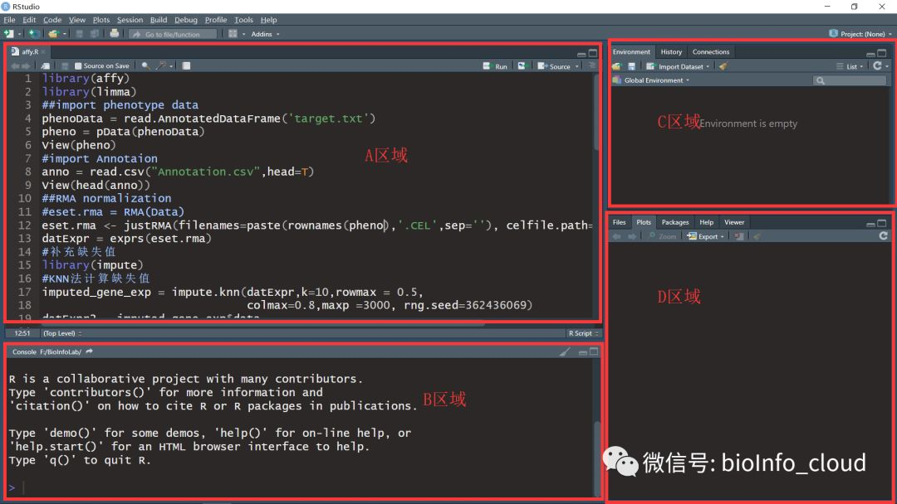
A区域：这个区域主要负责代码的撰写。刚安装的RStudio，启动时，可能会看不到这个A区域。
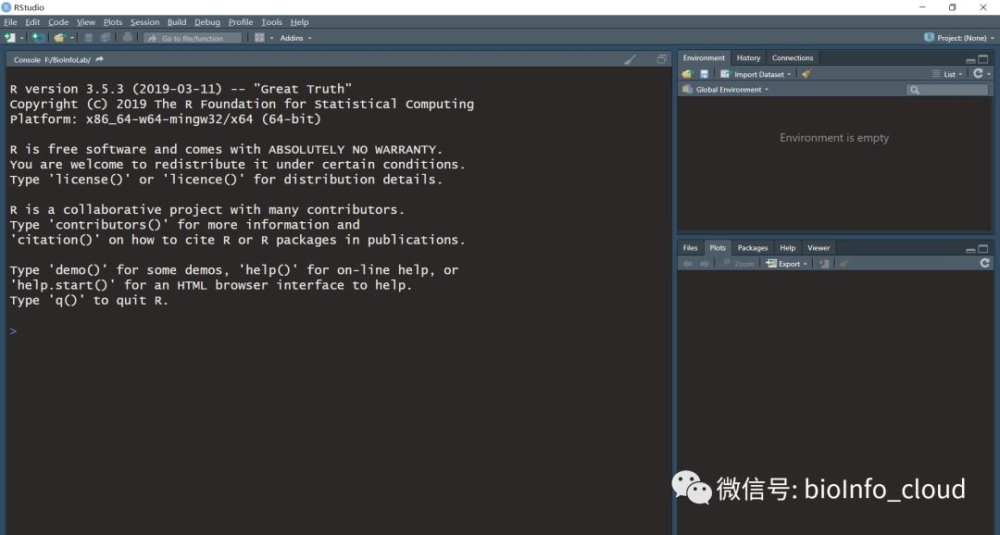
而是B区域全部占据了A区域，可点击左上角的【File】→【New File】→【R Script】，即可看见。如果之前打开过R脚本，再打开RStudio会出现之前打开过的R脚本。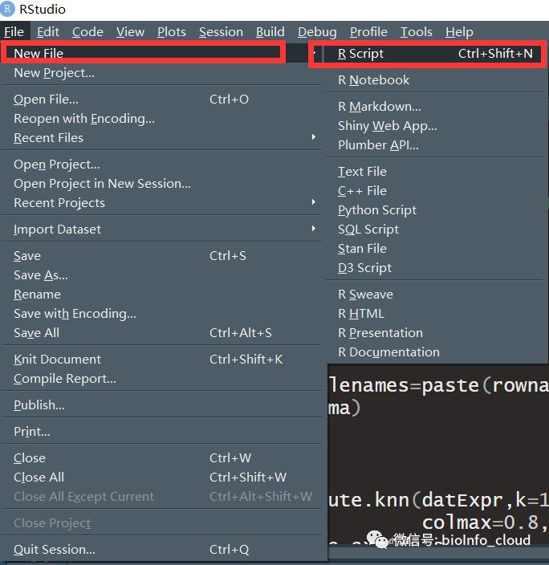
上面步骤将新建一个名为“Untitled1”的R代码文件（后缀名默认为.R）。你可在文件内撰写代码，然后可按快捷键
保存文件。也可点击左上角的【File】→【Save】进行保存。接着会跳出“Save File”弹出框，然后可将“Untitled1”文件重命名。这里重命名为“test”，然后点“Save”保存文件。文件将保存在你想保存的工作路径下。接着会跳出“Save File”弹出框，然后可将“Untitled1”文件重命名。这里重命名为“test”，然后点“Save”保存文件。文件将保存在当前工作路径下。
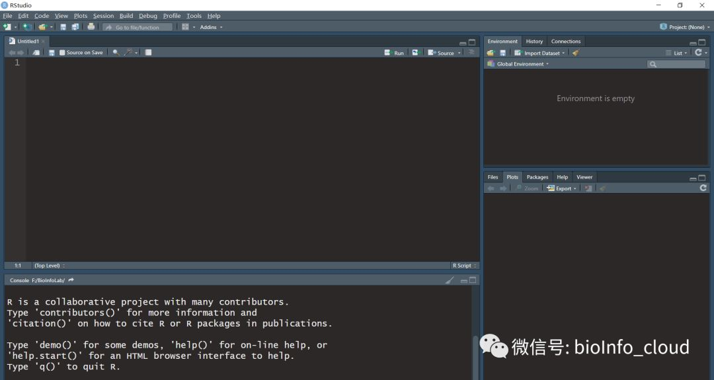
B区域：Console区这里是执行代码的地方，执行结果也会显示在这里。在A区域输入代码，没执行一行都会在这里显示。也可在这个区域直接输入代码，然后按回车键执行代码，输出结果。在这个区域直接输入代码，执行，和RGUI界面差不多。所有我们就不介绍RGUI。在A区域输入的代码，可通过点击Run运行光标所在行的代码，点一次运行一行，也可通过【Crtl +Enter】运行。运行的代码会在B区域显示，如果代码有错，也会出现相应的报错提示。B区域随着代码的运行，会越来越多
，可通过掃把按钮清空，想要清除Console上的内容，还可按【Ctrl + L】快捷键或者在Console输入cat('\f')。
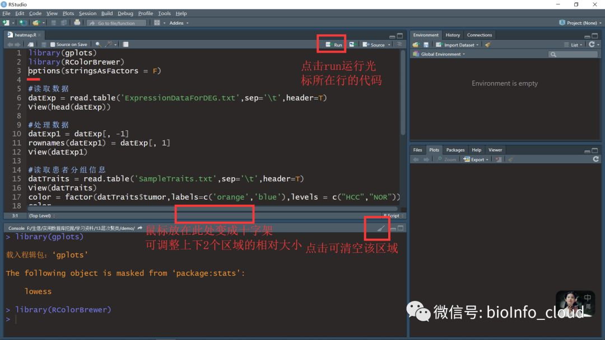
C区域 Environment：是用来记录当前变量的数值，方便查看当前变量的状况。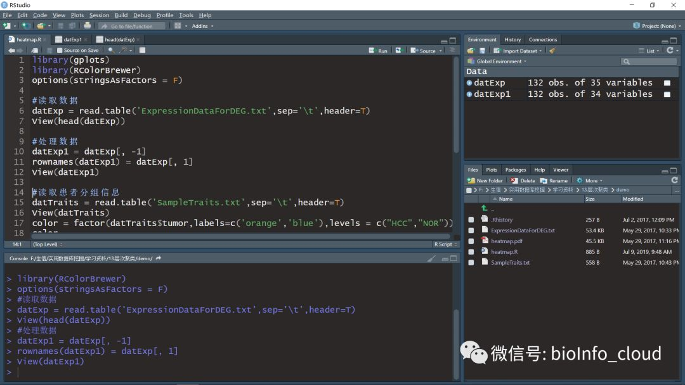
** **History：是所有在 Console区内代码执行的历史记录。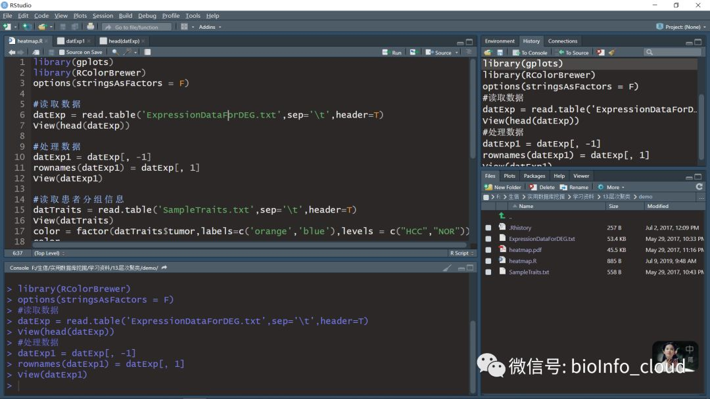
** **Connections：是用来方便连接外部数据库，用得非常少，先不介绍。D区域：Files, Plots, Packages, Help, ViewerFiles：这里会显示当前工作路径下的文件，让使用者了解所在的工作路径，这对读写文件非常重要。
如下图，当前的工作路径所有文件。
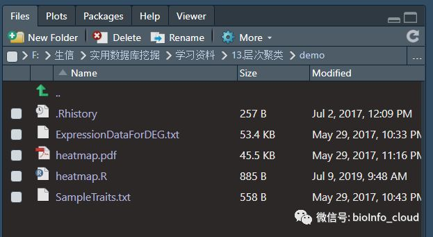
你可通过在Console输入
函数来获取当前工作路径：
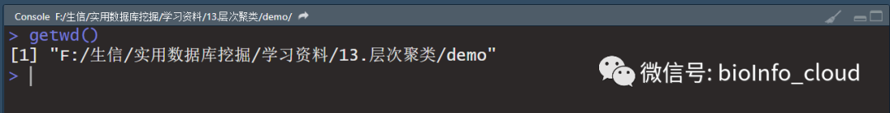
如果Files下显示的不是当前工作路径，那是由于没及时更新视图所导致的。可点击Console字符串旁边箭头的来更新，如下图。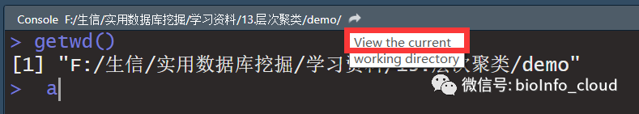
Plots：画好的图将在这里显示。
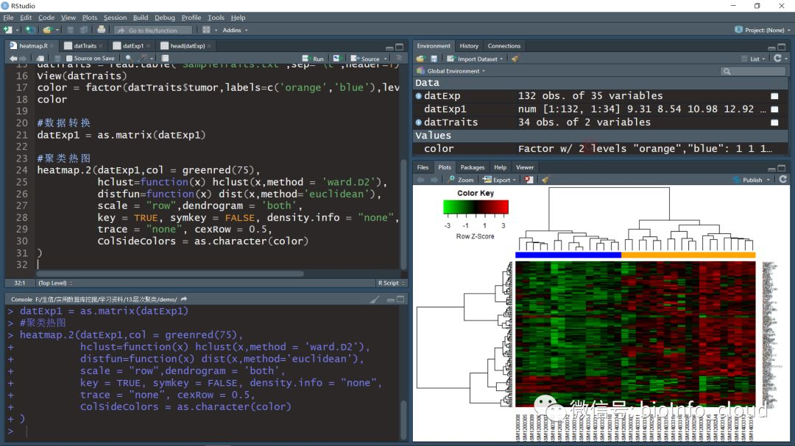
Packages：显示已经安装好了的包，打勾代表已经加载。安装Package点击Install，然后输入包名；也可在Console中输入相应代码来安装包，比如install.packages('data.table')将安装“data.table”这个包。更新包点Update。
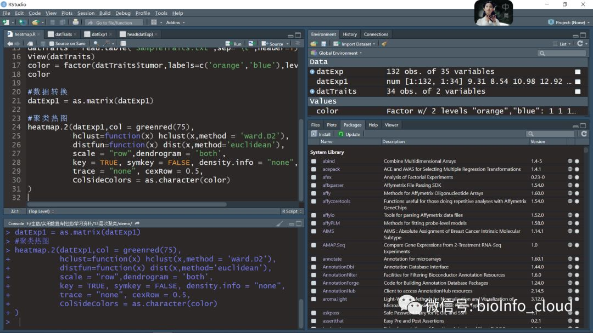
Help：查询函数如何使用，下图是查询read.table。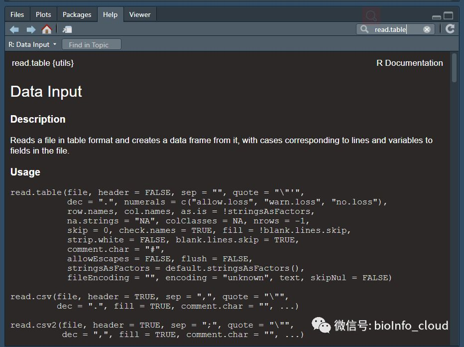
也可在Console中输入help()函数，()内输入所要查询的函数。比如：help(read.table)。或者直接在Console输入?read.table，如下图。
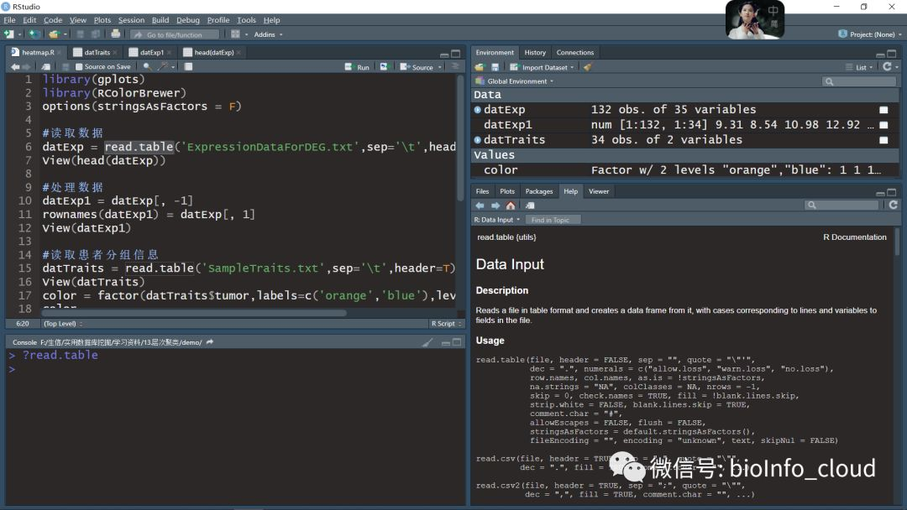
Viewer：是用来显示本地网页文件，用得比较少。2RStudio的相关设置切换不同R版本R允许多个版本共存，比如我在电脑上同时安装了2个版本（如下图）。通过RStudio可以很方便在各个R版本间进行切换。
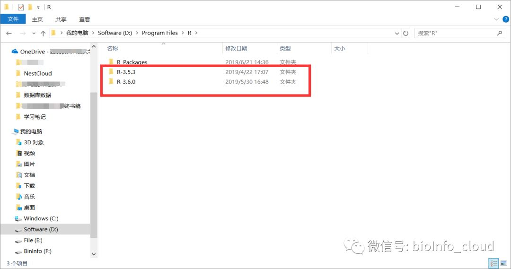
点击【Tools】→【Global Options...】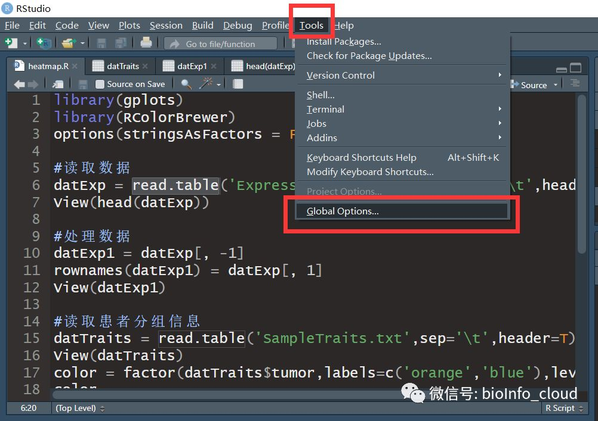
接着点【General】→【Change...】→【Choose a specific version of R】→选中切换的R版本→【OK】→【OK】；下次启动RStudio后，R将切换到相应版本。这里需要注意的是，在Choose a specific version of R中出现的R版本是已经配置了环境变量的。没有配置环境变量不会自动显示，需要点击Browse去选择你安装的版本。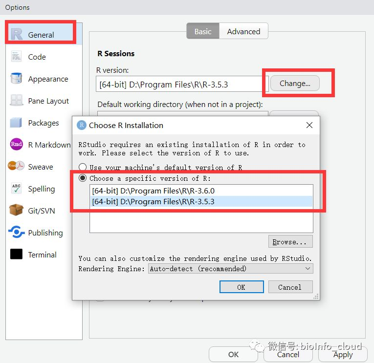
包安装镜像切换由于网速慢的原因，有时安装包会安装失败。
此时可以通过将包安装切换至中国镜像来解决：点【Tools】→【Global Options...】，接着点【Packages】→【Change...】→【选中一个中国镜像】→【OK】→【OK】。如下图，以后安装包都会通过这个镜像。
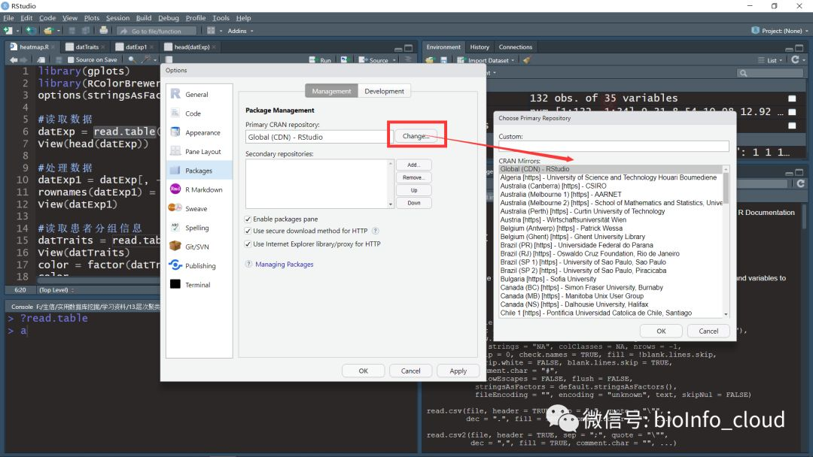
界面样式的修改这里，我的RStudio背景是黑色，不同人喜欢不同背景。可通过【Tools】→【Global Options...】，接着点【Appearance】进行设置。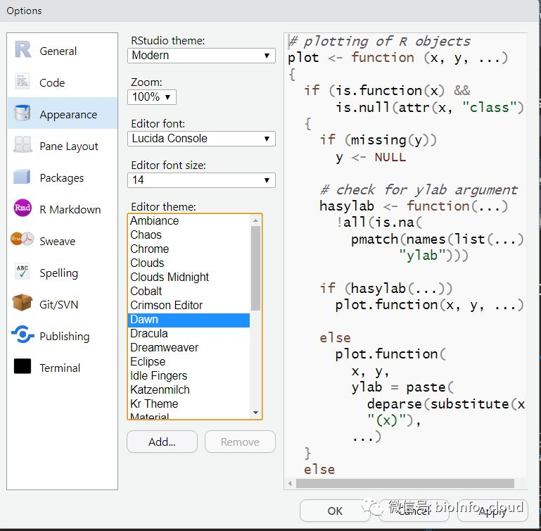
代码编译格式有时候打开别人给你发的代码，里边的中文注释换乱码，可通过【Tools】→【Global Options...】，接着点【Code】→【Saving】进行设置。一般选择UTF-8.
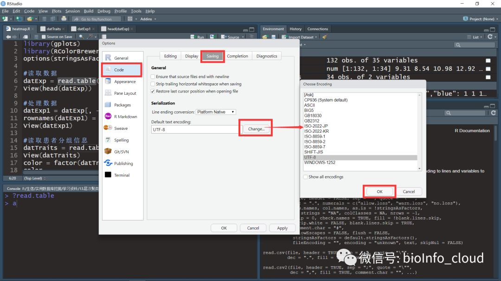
三.数行天下——R中的数据¶
1.从存储角度划分¶
如果学过像JAVA或者C这样的高级语言，都知道，数据类型的概念，包括，整数型、浮点型、字符串、布尔类型。这些语言中，定义变量需要定义数据类型，而在R中不需要。只需要直接赋值即可。在给变量赋值时，R中可以用<-或者=进行赋值。比如：num <- 1213，cha = "MedBioInfoCloud"。
R语言-变量命名规则
大原则：只有字母（区分大小写）、数字、“_”（下划线）、“.”（英文句号）可以出现。
数字、下划线不能开头。
英文句号开头不能紧接数字。
从存储角度划分，R中的数据可以划分为数值型、字符串型、逻辑型、复数型、raw型和缺失值。
可以划分为数值型、字符串型、逻辑型、复数型、raw型和缺失值。
（1）数值类型（numeric）
可以是整数、小数、科学计数的方式。默认为双精度型数据。
（2）字符型（character）
以双引号或单引号夹起来的数据，如"MedBioInfoCloud"。
（3）逻辑型（logical）
只有TRUE和FALSE两种值。
（4）复数型（complex）
形如a + bi的数据。
（5）raw数据
二进制形式保存的数据。
（6）缺失值（missing value）
NA（not available）或者NULL
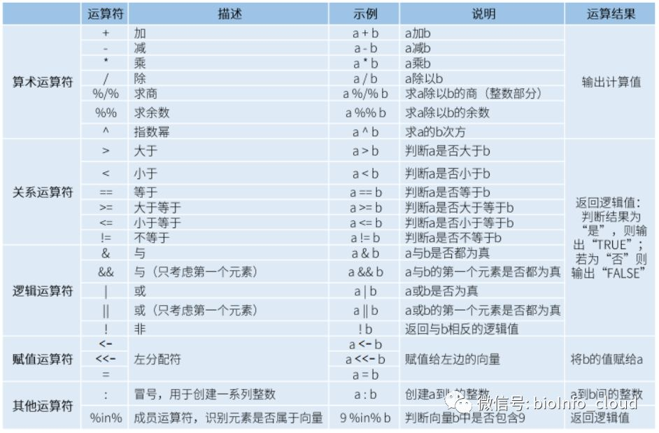
2.从结构角度划分¶
R的数据对象从结构角度来看包括向量、矩阵、数组、数据框、列表、因子。
R拥有许多用于存储数据的对象类型，包括标量、向量、矩阵、数组、数据框和列表。它们在存储数据的类型、创建方式、结构复杂度，以及用于定位和访问其中个别元素的标记等方面均有所不同。下图给出了这些数据结构的一个示意图。
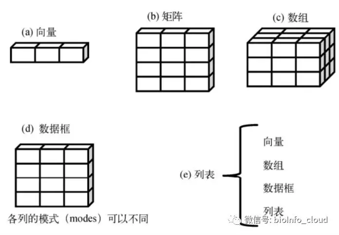
2.1 向量¶
向量的创建
向量是用于存储数值型、字符型或逻辑型数据的一维数组。执行组合功能的函数c()可用来创建向量。各类向量如下例所示：
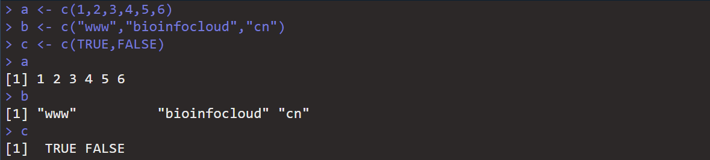
这里，a是数值型向量，b是字符型向量，而c是逻辑型向量。注意，单个向量中的数据必须拥有相同的类型或模式（数值型、字符型或逻辑型）。同一向量中无法混杂不同模式的数据。
通过在方括号中给定元素所处位置的数值，我们可以访问向量中的元素。例如，a[c(3, 5)]用于访问向量a中的第二个和第四个元素。
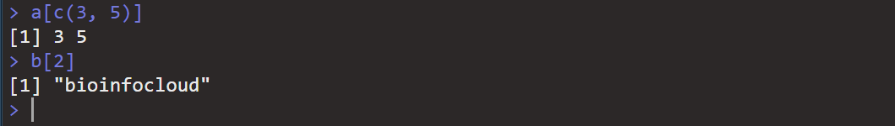
使用的冒号用于生成一个数值序列。例如，a <- c(2:6)等价于a <- c(2,3, 4, 5, 6)。
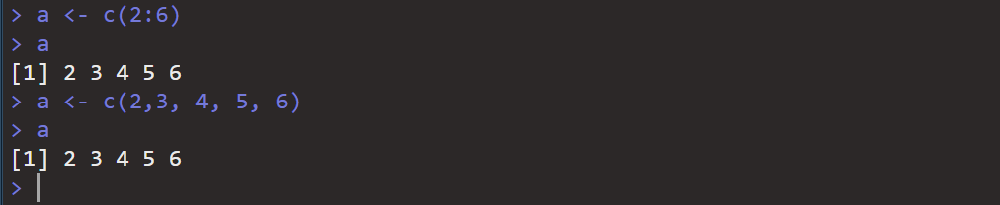
向量操作
（1）seq()函数
seq()函数可以用来创建向量，下面是创建1-9,步长为2 向量。
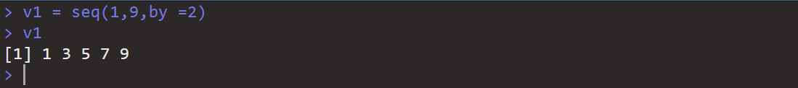
也可以不指定步长，指定个数，R会自己计算步长。
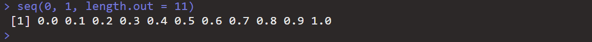
更多seq()的使用方法通过help("seq")查看
## Default S3 method:
seq(from = 1, to = 1, by = ((to - from)/(length.out - 1)),
length.out = NULL, along.with = NULL, ...)
seq.int(from, to, by, length.out, along.with, ...)
seq_along(along.with)
seq_len(length.out)
（2）rep()函数
rep()函数可以用来重复复制元素。
> rep(1,5) #把1重复五遍
[1] 1 1 1 1 1
> v1 <-c(11,12,13,14,15)
> rep(v1,2)
[1] 11 12 13 14 15 11 12 13 14 15
> rep(1:4, 2)#1-4重复2次
[1] 1 2 3 4 1 2 3 4
> rep(1:4, each = 2)# 1-4的每个元素重复2次，注意和上面的区别。
[1] 1 1 2 2 3 3 4 4
> rep(1:4, c(2,2,2,2))#指定每个元素的重复次数。
[1] 1 1 2 2 3 3 4 4
> rep(1:4, c(2,1,2,1))#指定每个元素的重复次数。
[1] 1 1 2 3 3 4
> rep(1:4, each = 2, len = 4)
# each = 2指定了1-4每个元素重复2次，理论上有8个元素，
# 但又指定的元素的总长度len = 4，因此后面的3 3 4 4没有显示。
[1] 1 1 2 2
> rep(1:4, each = 2, len = 10)
# 指定了总长度为len = 10，但rep(1:4, each = 2)的结果只要8个元素
# 不足10个，会从头自动补齐。所以多了1 1.
[1] 1 1 2 2 3 3 4 4 1 1
> rep(1:4, each = 2, times = 3)#先每个元素重复2次后，再重复3次
[1] 1 1 2 2 3 3 4 4 1 1 2 2 3 3 4 4 1 1 2 2 3 3 4 4
（3）向量连接
要注意的是，向量连接只能用于同一类型的数据，同为数值，同为字符串或布尔值。
> c1 <- c(1,2,3,4)
> c1
[1] 1 2 3 4
> c2<- c(5,6,7,8)
> c2
[1] 5 6 7 8
> c3 <- c(c1,c2)
> c3
[1] 1 2 3 4 5 6 7 8
（4）向量拼接
> cbind(c1,c2)#按列拼接
c1 c2
[1,] 1 5
[2,] 2 6
[3,] 3 7
[4,] 4 8
> rbind(c1,c2)#按行拼接
[,1] [,2] [,3] [,4]
c1 1 2 3 4
c2 5 6 7 8
（5）向量运算
#长度相等的向量进行加减乘除运算时，对应元素进行相应的运算。
> c1+c2
[1] 6 8 10 12
> c1*c2
[1] 5 12 21 32
> c1/c2
[1] 0.2000000 0.3333333 0.4285714 0.5000000
> c1+c3
# 如果2个向量长度不等，会按照短的向量重复运算补齐
[1] 2 4 6 8 6 8 10 12
2.2 矩阵¶
矩阵是一个二维数组，只是每个元素都拥有相同的模式（数值型、字符型或逻辑型）。可通过函数matrix创建矩阵。一般使用格式为：
其中data包含了矩阵的元素，nrow和ncol用以指定行和列的维数，dimnames包含了可选的、以字符型向量表示的行名和列名。选项byrow则表明矩阵应当按行填充（byrow=TRUE）还是按列填充（byrow=FALSE），默认情况下按列填充。
（1）创建矩阵
不指定参数byrow
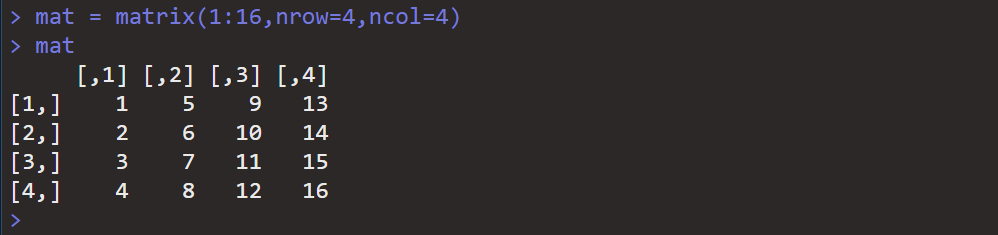
创建1:16的矩阵，行为4行，先按行排列
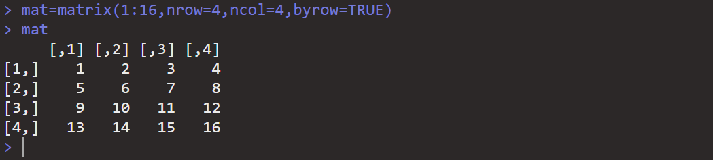
（2）查看矩阵维数并更改列名
> dim(mat)#查看维度
[1] 4 4
> length(mat)# 查看元素总个数
[1] 16
> colnames(mat) = c('a','b','c','d') #更改列名
> rownames(mat) = c('e','f','g','h') #更改行名
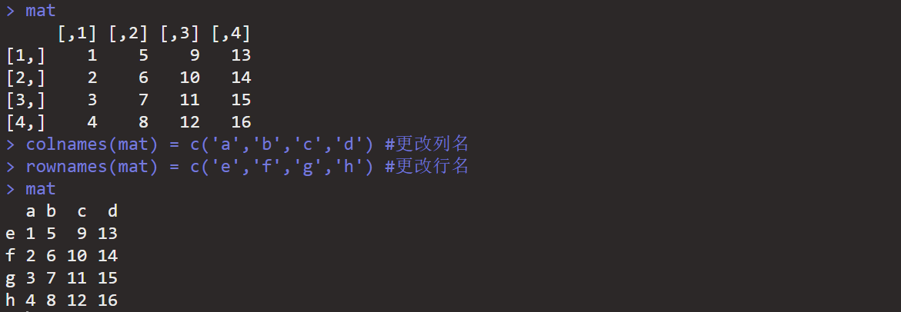
可以用dim.name函数获取行名和列名。
> dim.name = dimnames(mat)
> dim.name
[[1]]
[1] "e" "f" "g" "h"
[[2]]
[1] "a" "b" "c" "d"
> dim.name[[1]]
[1] "e" "f" "g" "h"
（3）矩阵的取值
> mat[1,3] #取第一行，第三列元素
[1] 3
> mat[2,] #取第二行，所有列
a b c d
5 6 7 8
> mat[,3:4]#取第三列到第四列，所有行
c d
e 3 4
f 7 8
g 11 12
h 15 16
> mat[c(1,3),c(2,4)] #当取不相邻矩阵的行和列可以用c()创建向量
b d
e 2 4
g 10 12
> mat[-1,-2] #除去第一行 和第二列不取，其他全取
a c d
f 5 7 8
g 9 11 12
h 13 15 16
> mat['f','a'] #也可以使用行名和列名来取
[1] 5
（4）矩阵的运算-元素间运算
对矩阵的每个元素进行加减乘除，且顺序是按照列来算的。
> mat #原始矩阵
a b c d
e 1 2 3 4
f 5 6 7 8
g 9 10 11 12
h 13 14 15 16
> mat*3 #每个元素乘以3
a b c d
e 3 6 9 12
f 15 18 21 24
g 27 30 33 36
h 39 42 45 48
> mat*c(1:4) #每一列均乘以1，2，3，4
a b c d
e 1 2 3 4
f 10 12 14 16
g 27 30 33 36
h 52 56 60 64
> mat #对矩阵运算不会改变原矩阵
a b c d
e 1 2 3 4
f 5 6 7 8
g 9 10 11 12
h 13 14 15 16
> mat1 = mat*c(1:4) #如果需要保留矩阵运算之后的矩阵，需要额外命名
> mat1
a b c d
e 1 2 3 4
f 10 12 14 16
g 27 30 33 36
h 52 56 60 64
> mat*c(1:16) #按列进行对应元素相乘
a b c d
e 1 10 27 52
f 10 36 70 112
g 27 70 121 180
h 52 112 180 256
> mat + 5
a b c d
e 6 7 8 9
f 10 11 12 13
g 14 15 16 17
h 18 19 20 21
> mat/3
a b c d
e 0.3333333 0.6666667 1.000000 1.333333
f 1.6666667 2.0000000 2.333333 2.666667
g 3.0000000 3.3333333 3.666667 4.000000
h 4.3333333 4.6666667 5.000000 5.333333
> mat/c(1:3) #如果维度不对应，会有警告
a b c d
e 1.0 1 1.0 4
f 2.5 2 7.0 4
g 3.0 10 5.5 4
h 13.0 7 5.0 16
Warning message:
In mat/c(1:3) :
longer object length is not a multiple of shorter object length
（5）矩阵运算-矩阵间运算
> t(mat) #求矩阵转置
e f g h
a 1 5 9 13
b 2 6 10 14
c 3 7 11 15
d 4 8 12 16
> mat%*%mat #矩阵与矩阵相乘
a b c d
e 90 100 110 120
f 202 228 254 280
g 314 356 398 440
h 426 484 542 600
> mat%*%c(1:4)
[,1]
e 30
f 70
g 110
h 150
> det(mat) #求矩阵的行列式
[1] 4.733165e-30
> diag(mat) #求矩阵的对角线元素
[1] 1 6 11 16
> mat2 = matrix(rnorm(16),nrow = 4) #rnorm表示在R中生成标准正态分布(normolisation)的随机数
> mat3 = solve(mat2) #求逆
> mat2%*%mat3
2.3.数组¶
数组（array）与矩阵类似，但是维度可以大于2。数组可通过array函数创建，形式如下：
其中data包含了数组中的数据，dim是一个数值型向量，给出了各个维度下标的最大值，而dimnames是可选的、各维度名称标签的列表。
下面将创建的每两个3×3矩阵的数组，具有3行3列。
- 数组的创建
# 创建两个不同长度的向量
vector1 <- c(5,9,3)
vector2 <- c(10,11,12,13,14,15)
# 把这些向量作为数组的输入
result <- array(c(vector1,vector2),dim=c(3,3,2))
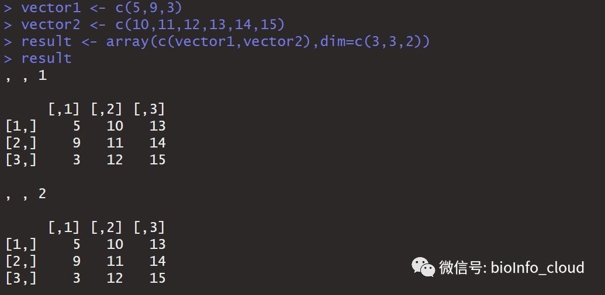
(2) 命名列和行
我们可以通过使用dimnames参数给予名称添加到数组中的行，列和矩阵。
> cname = c("COL1","COL2","COL3")
> rname = c("ROW1","ROW2","ROW3")
> mat <- c("Matrix1","Matrix2")
> array(c(vector1,vector2),dim=c(3,3,2),dimnames = list(rname,cname,mat))
, , Matrix1
COL1 COL2 COL3
ROW1 5 10 13
ROW2 9 11 14
ROW3 3 12 15
, , Matrix2
COL1 COL2 COL3
ROW1 5 10 13
ROW2 9 11 14
ROW3 3 12 15
(3) 访问数组元素访问数组是用[]索引。
result =array(c(vector1,vector2),dim=c(3,3,2),dimnames = list(rname,cname,mat))
# 打印数组第二个矩阵的第三行
result[3,,2]
# 打印第1矩阵的第1行和第3列中的元素。
result[1,3,1]
# 打印第二个矩阵
result[,,2]
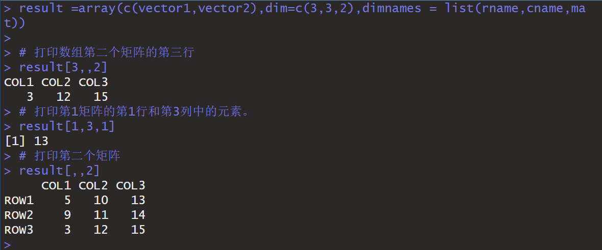
(4) 操纵数组元素
2.4.数据框¶
由于不同的列可以包含不同模式（数值型、字符型等）的数据，数据框的概念较矩阵来说更为一般。它与你通常在SAS、SPSS和Stata中看到的数据集类似。数据框将是你在R中最常处理的数据结构。
每一列数据的模式必须唯一，不过你却可以将多个模式的不同列放到一起组成数据框。由于数据框与分析人员通常设想的数据集的形态较为接近，我们在讨论数据框时将交替使用术语列和变量。
data.frame(data, row.names = NULL, check.rows = FALSE,
check.names = TRUE, fix.empty.names = TRUE,
stringsAsFactors = default.stringsAsFactors())
data参数的形式要么是value，要么是tag=value。基于标记(如果存在)或离开的参数本身创建组件名称。row.names参数为NULL或单个整数或字符串，指定要用作行名称的列，或给出数据框行名称的字符或整数向量。check.rows如果为真，则检查行长度和名称的一致性。check.names 如果为真，则检查数据框中变量的名称，以确保它们是语法上有效的变量名称，并且不重复。如果有必要，可以(通过make.name)对它们进行调整。fix.empty.names：逻辑指示“未命名”的参数(在未被正式调用为someName = arg的意义上)是否得到自动构造的名称，或者更确切地说是名称“”。需要设置为FALSE，即使在检查时也是如此。stringsAsFactors字符向量应该转换为因子吗?“factory-fresh”默认值为TRUE，但是可以通过设置选项来更改(stringsAsFactors = FALSE)。
（1）创建一个数据框
使用data.frame函数就可以初始化一个数据框。比如我们要初始化一个student的Data Frame其中包含ID和Name还有Gender以及Birthdate，那么代码为：
> Birthdate <-c("1984-12-29","1983-5-6","1986-8-8")
> Name <-c("Devin","Edward","Wenli")
> Gender <-c("M","M","F")
> ID <- c(11,12,13)
> student<-data.frame(ID,Gender,Name,Birthdate)
> student
ID Gender Name Birthdate
1 11 M Devin 1984-12-29
2 12 M Edward 1983-5-6
3 13 F Wenli 1986-8-8
（2）操作一些字符串的函数
> dim(student) #查看它的维度
> length(student) #只输出有列的个数
> names(student) #只输出列名
> colnames(student) #也可以这样子输出
> rownames(student) #要输出行名要用这个
> # R的数据框的元素选取和矩阵的元素选取很像，
> # 唯一差别就是通过列名选取时，可以使用如下方式选取。
> student$ID 用$符号加上列名，获取该列数据
[1] 11 12 13
#由于Gender列是字符串，默认情况下转化为了因子，所以出现了Levels: F M
[1] M M F
> student$Gender
Levels: F M
2.5.列表¶
列表（List）是R中最复杂的数据类型，一般来说，列表是数据对象的有序集合，但是，列表的各个元素（item）的数据类型可以不同，每个元素的长度可以不同，是R中最灵活的数据类型。列表项可以是列表类型，因此，列表被认为是递归变量，与之相对，向量，数组，矩阵，数据框被认为是原子变量。
列表由list()函数创建，每个参数使用逗号分割，用于指定列表项的内容，列表中的元素数量不限，类型不限。列表项的名称是可选的，可以创建无名的列表项；列表的每一个item，都可以显示命名，例如，name1=item1, name2=item2。
（1）创建一个列表
例如，下面的脚本创建一个列表，该列表共有2个item，第一个item是gene，及基因，第二个item是ID，表示病人的ID。gene和ID叫标签。
> glist = list( gene = c("TP53","GAPDH","EGFR"),ID = c(1,2,3))
> glist
$gene
[1] "TP53" "GAPDH" "EGFR"
$ID
[1] 1 2 3
创建列表是可以不创建标签的。
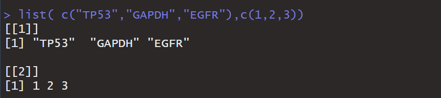
（2）访问列表中组件
访问列表中组件的方法，用$符号或者[[]]。
[[]]一次只能提取一个组件，返回的类型是组件的类型，不是列表。
（3）增加或删除列表中的元素
> glist
$gene
[1] "TP53" "GAPDH" "EGFR"
$ID
[1] 1 2 3
$expValue
[1] 56 3454 245
> glist[["ID"]] =NULL
> glist
$gene
[1] "TP53" "GAPDH" "EGFR"
$expValue
[1] 56 3454 245
（4）访问列表标签
如果列表定义了标签，可以用names()函数获取。
可以用unlist()函数获取值，unlist()返回值就是一个向量，向量名来自标签。
> unlist(glist)
gene1 gene2 gene3 expValue1 expValue2 expValue3
"TP53" "GAPDH" "EGFR" "56" "3454" "245"
（5）递归型列表
列表是可以递归的，意思是列表的组件可以是列表。
2.6.因子¶
变量可归结为名义型、有序型或连续型变量。名义型变量是没有顺序之分的类别变量。类别（名义型）变量和有序类别（有序型）变量在R中称为因子（factor）。因子在R中非常重要，因为它决定了数据的分析方式以及如何进行视觉呈现。因子（factor)是R语言中比较特殊的一个数据类型， 它是一个用于存储类别的类型，举个例子，从性别上，可以把人分为：男人和女人，从年龄上划分，又可以把人分为：未成年人（<18岁），成年人（>=18）。R把表示分类的数据称为因子，因子的行为有时像字符串，有时像整数。因子是一个向量，通常情况下，每个元素都是字符类型，也有其他数据类型的元素。因子具有因子水平（Levels），用于限制因子的元素的取值范围，R强制：因子水平是字符类型，因子的元素只能从因子水平中取值，这意味着，因子的每个元素要么是因子水平中的字符（或转换为其他数据类型），要么是缺失值，这是因子的约束，是语法上的规则。
通常情况下，在创建数据框变量时，R隐式把数据类型为字符的列创建为因子，这是因为R会把文本类型默认为类别数据，并自动转换为因子。
> patient <-c("patient1","patient2","patient3")
> Name <-c("Devin","Edward","Wenli")
> Gender <-c("M","M","F")
> patientInfo<-data.frame(patient,Gender,Name)
> patientInfo
patient Gender Name
1 patient1 M Devin
2 patient2 M Edward
3 patient3 F Wenli
> patientInfo$Gender
[1] M M F
Levels: F M
通过class()函数检查gender列的类，结果是因子类型，而不是字符向量。
（1）创建因子
可以通过factor()函数创建因子，factor()函数的第一个参数必须是字符向量，通过levels参数显式设置因子水平。
参数注释：
x：是向量，通常是由少量唯一值的字符向量
levels：水平，字符类型，用于设置x可能包含的唯一值，默认值是x的所有唯一值。如果x不是字符向量，那么使用as.character(x)把x转换为字符向量，然后获取x向量的水平。x向量的取值跟levels有关。
labels：是水平的标签，字符类型，用于对水平添加标签，相当于对因子水平重命名；
exclude：排除的字符
ordered：逻辑值，用于指定水平是否有序；
nmax：水平的上限数量
例如，因子sex的值是向量c('f','m','f','f','m')，因子水平是c('f','m')
（2）因子水平
因子水平规定了因子取值的范围，每一个因子，都包含因子水平的信息，例如，打印Gender列，可以看到因子的元素和水平：
> patient <-c("patient1","patient2","patient3")
> Name <-c("Devin","Edward","Wenli")
> Gender <-c("M","M","F")
> patientInfo<-data.frame(patient,Gender,Name)
> patientInfo
patient Gender Name
1 patient1 M Devin
2 patient2 M Edward
3 patient3 F Wenli
> patientInfo$Gender
[1] M M F
Levels: F M
该因子中的每个值都是一个字符串，它们被限制为“F”、“M”和缺失值（NA）。如果把其他字符串添加到gender列中，R会抛出警告消息，并把错误赋值的元素设置为NA，例如：
> patientInfo$Gender[1]<- "female"
Warning message:
In `[<-.factor`(`*tmp*`, 1, value = c(NA, 2L, 1L)) :
invalid factor level, NA generated
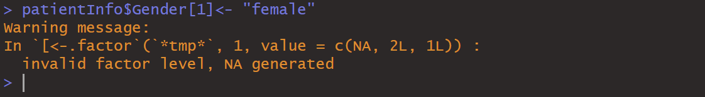
因子水平，可以通过函数levels(factor)来查看：
水平的级数，相当于level的长度，可以由nlevels函数查询到：
使用factor函数创建因子，可以使用labels参数为每个因子水平添加标签，labels参数的字符顺序，要和levels参数的字符顺序保持一致，例如：
> sex <-factor(c('f','m','f','f','m'),levels=c('f','m'),
labels=c('female','male'),ordered=TRUE)
> sex
[1] female male female female male
Levels: female < male
（3）有序因子
通常情况下，因子一般是无序的，这可以通过is.ordered()函数来验证：
因子的顺序，实际上是指因子水平的顺序，有序因子的因子水平是有序的。在特殊情况下，有些因子的水平在语义上大于或小于其他水平，R支持按顺序排列的因子，使用ordered函数，或通过给factor函数传入order=TRUE参数，把无序因子转换为有序的因子。
ordered()函数不能指定特定因子水平的顺序，通常情况下，因子中先出现的水平小于后出现的水平。例如，通过ordered函数把sex因子转换为有序的因子：
> sex <- factor(c('f','m','f','f','m'),levels=c('f','m'))
> ordered(sex)
[1] f m f f m
Levels: f < m
通过factor函数创建有序因子，通过levels指定因子的顺序。
> sex <- factor(c('f','m','f','f','m'),
levels=c('f','m'),ordered=TRUE)
> sex
[1] f m f f m
Levels: f < m
因子的顺序，其实是因子水平的顺序，我们可以通过levels，使现有的因子按照指定的因子水平来排序。
例如，把heights数据框的gender，按照指定的levels，转换成有序因子。
> heights <- data.frame(height_cm=c(156,182,170),
gender=c('f','m','f'))
> heights
height_cm gender
1 156 f
2 182 m
3 170 f
> heights$gender
[1] f m f
Levels: f m
> heights$gender <- factor(heights$gender,
levels=c('m','f'),ordered=TRUE)
> heights
height_cm gender
1 156 f
2 182 m
3 170 f
> heights$gender
[1] f m f
Levels: m < f
（4）删除因子水平
在数据清理时，可能需要去掉与因子水平对应的数据，通常情况下，需要删除未使用的因子水平，可以使用droplevels函数，它接受因子或是数据框作为参数。
## S3 method for class 'factor'
droplevels(x, exclude = if(anyNA(levels(x))) NULL else NA, ...)
## S3 method for class 'data.frame'
droplevels(x, except, exclude, ...)
如果x是数据框，那么把数据框中未使用的因子删除。
（5）把因子水平转换为字符串
在数据清理中，有时需要把因子转换为字符，通常情况下，使用as.character()函数，把因子转换为字符串：
（6）把因子转换成相应的整数
使用as.numeric()或as.integer()函数可以把因子转换成对应的整数.
（7）把连续变量分割为类别
函数cut()能够把数值变量切成不同的块，然后返回一个因子.
参数注释：
x：数值变量
breaks：切割点向量
labels：每一个分组的标签
例如，把身高数据，按照指定的切割点向量分割：
> cut(heights$height_cm,c(150,170,190))
[1] (150,170] (170,190] (150,170]
Levels: (150,170] (170,190]
一般情况下，数据框中的字符类型的列会转换为因子类型，要修改因子类型，一般通过三步来完成：
mydata$Category <- as.character(mydata$Category)
mydata <- within(mydata,{Category[Category=="old name"] <- "new name"})
mydata$Category <- as.factor(mydata$Category)
当需要把因子转换为有序因子时，要注意因子水平的顺序.
3.数据之间的转换¶
geneName = c("TP53","LC3B","mTOR","PD1","CD274")
geneExp = c(131,145,35,657,878)
ID = c("P1",'P2',"P3","P4","P5")
EXP = data.frame(geneName,geneExp)
arr= array(1:27,c(3,3,3))
mat = matrix(geneExp,nrow = length(geneExp),ncol = 1,
dimnames = list(geneName,"expValue"))
lis = list(ID = ID ,EXP = EXP,ARR = arr,mat = mat)
fa = factor(c("cancer","control","cancer","control","cancer"))
3.1 is系列函数¶
is.na()，is.null()，is.array()，is.atomic()，is.character()，is.data.frame()，is.matrix()，is.factor()...................
3.2 as系列函数¶
as.array()，as.atomic()，as.character()，as.data.frame()，as.matrix()，as.factor()................
四.字符串操作与正则表达式¶
1.正则表达式¶
处理文本是每一种计算机语言都应该具备的功能，但不是每一种语言都侧重于处理文本。R语言是统计的语言，处理文本不是它的强项，perl语言这方面的功能比R不知要强多少倍。幸运的是R语言的可扩展能力很强，DNA/RNA/AA等生物序列现在已经可以使用R来处理。
方括号表示选择方括号中的任意一个（如[a-z] 表示任意一个小写字符）；^ 放在表达式开始处表示匹配文本开始位置，放在方括号内开始处表示非方括号内的任一字符；大括号{}表示前面的字符或表达式的重复次数；| 表示可选项，即 | 前后的表达式任选一个。
如果要在正则表达式中表示元字符本身，比如我就要在文本中查找问号‘?’， 那么就要使用引用符号（或称换码符号），一般是反斜杠 '\'。需要注意的是，在R语言中得用两个反斜杠即 ‘\’，如要匹配括号就要写成 '\(\)'。
\d 表示数字0-9，
\D 表示非数字，
\s 表示空白字符（包括空格、制表符、换行符等），
\S 表示非空白字符，
\w 表示字（字母和数字），
\W 表示非字，
\< 和 > 分别表示以空白字符开始和结束的文本。
正则表达式符号运算顺序：圆括号括起来的表达式最优先，然后是表示重复次数的操作（即：* + {} ），接下来是连接运算（其实就是几个字符放在一起，如abc），最后是表示可选项的运算（|）。所以 'foot|bar' 可以匹配’foot‘或者’bar‘，但是 'foot|ba{2}r'匹配的是’foot‘或者’baar‘。
元字符 |
描述 |
|---|---|
\ |
将下一个字符标记符、或一个向后引用、或一个八进制转义符。例如，“\n”匹配\n。“\n”匹配换行符。序列“\”匹配“\”而“(”则匹配“(”。即相当于多种编程语言中都有的“转义字符”的概念。 |
^ |
匹配输入字符串的开始位置。如果设置了RegExp对象的Multiline属性，^也匹配“\n”或“\r”之后的位置。 |
$ |
匹配输入字符串的结束位置。如果设置了RegExp对象的Multiline属性，$也匹配“\n”或“\r”之前的位置。 |
* |
匹配前面的子表达式任意次。例如，zo*能匹配“z”，也能匹配“zo”以及“zoo”。 |
+ |
匹配前面的子表达式一次或多次(大于等于1次）。例如，“zo+”能匹配“zo”以及“zoo”，但不能匹配“z”。+等价于{1,}。 |
? |
匹配前面的子表达式零次或一次。例如，“do(es)?”可以匹配“do”或“does”中的“do”。?等价于{0,1}。 |
{n} |
n是一个非负整数。匹配确定的n次。例如，“o{2}”不能匹配“Bob”中的“o”，但是能匹配“food”中的两个o。 |
{n,} |
n是一个非负整数。至少匹配n次。例如，“o{2,}”不能匹配“Bob”中的“o”，但能匹配“foooood”中的所有o。“o{1,}”等价于“o+”。“o{0,}”则等价于“o*”。 |
{n,m} |
m和n均为非负整数，其中n<=m。最少匹配n次且最多匹配m次。例如，“o{1,3}”将匹配“fooooood”中的前三个o。“o{0,1}”等价于“o?”。请注意在逗号和两个数之间不能有空格。 |
? |
当该字符紧跟在任何一个其他限制符（*,+,?，{n}，{n,}，{n,m}）后面时，匹配模式是非贪婪的。非贪婪模式尽可能少的匹配所搜索的字符串，而默认的贪婪模式则尽可能多的匹配所搜索的字符串。例如，对于字符串“oooo”，“o+?”将匹配单个“o”，而“o+”将匹配所有“o”。 |
.点 |
匹配除“\r\n”之外的任何单个字符。要匹配包括“\r\n”在内的任何字符，请使用像“[\s\S]”的模式。 |
(pattern) |
匹配pattern并获取这一匹配。所获取的匹配可以从产生的Matches集合得到，在VBScript中使用SubMatches集合，在JScript中则使用\(0…\)9属性。要匹配圆括号字符，请使用“”或“”或“”。 |
(?:pattern) |
非获取匹配，匹配pattern但不获取匹配结果，不进行存储供以后使用。这在使用或字符“( |
(?=pattern) |
非获取匹配，正向肯定预查，在任何匹配pattern的字符串开始处匹配查找字符串，该匹配不需要获取供以后使用。例如，“Windows(?=95 |
(?!pattern) |
非获取匹配，正向否定预查，在任何不匹配pattern的字符串开始处匹配查找字符串，该匹配不需要获取供以后使用。例如“Windows(?!95 |
(?<=pattern) |
非获取匹配，反向肯定预查，与正向肯定预查类似，只是方向相反。例如，“(?<=95 |
(?<!pattern) |
非获取匹配，反向否定预查，与正向否定预查类似，只是方向相反。例如“(?<!95 |
x |
y |
[xyz] |
字符集合。匹配所包含的任意一个字符。例如，“[abc]”可以匹配“plain”中的“a”。 |
[^xyz] |
负值字符集合。匹配未包含的任意字符。例如，“[^abc]”可以匹配“plain”中的“plin”。 |
[a-z] |
字符范围。匹配指定范围内的任意字符。例如，“[a-z]”可以匹配“a”到“z”范围内的任意小写字母字符。 注意:只有连字符在字符组内部时,并且出现在两个字符之间时,才能表示字符的范围; 如果出字符组的开头,则只能表示连字符本身. |
[^a-z] |
负值字符范围。匹配任何不在指定范围内的任意字符。例如，“[^a-z]”可以匹配任何不在“a”到“z”范围内的任意字符。 |
\b |
匹配一个单词边界，也就是指单词和空格间的位置（即正则表达式的“匹配”有两种概念，一种是匹配字符，一种是匹配位置，这里的\b就是匹配位置的）。例如，“er\b”可以匹配“never”中的“er”，但不能匹配“verb”中的“er”。 |
\B |
匹配非单词边界。“er\B”能匹配“verb”中的“er”，但不能匹配“never”中的“er”。 |
\cx |
匹配由x指明的控制字符。例如，\cM匹配一个Control-M或回车符。x的值必须为A-Z或a-z之一。否则，将c视为一个原义的“c”字符。 |
\d |
匹配一个数字字符。等价于[0-9]。grep 要加上-P，perl正则支持 |
\D |
匹配一个非数字字符。等价于[^0-9]。grep要加上-Pperl正则支持 |
\f |
匹配一个换页符。等价于\x0c和\cL。 |
\n |
匹配一个换行符。等价于\x0a和\cJ。 |
\r |
匹配一个回车符。等价于\x0d和\cM。 |
\s |
匹配任何不可见字符，包括空格、制表符、换页符等等。等价于[ \f\n\r\t\v]。 |
\S |
匹配任何可见字符。等价于[^ \f\n\r\t\v]。 |
\t |
匹配一个制表符。等价于\x09和\cI。 |
\v |
匹配一个垂直制表符。等价于\x0b和\cK。 |
\w |
匹配包括下划线的任何单词字符。类似但不等价于“[A-Za-z0-9_]”，这里的"单词"字符使用Unicode字符集。 |
\W |
匹配任何非单词字符。等价于“[^A-Za-z0-9_]”。 |
\xn |
匹配n，其中n为十六进制转义值。十六进制转义值必须为确定的两个数字长。例如，“\x41”匹配“A”。“\x041”则等价于“\x04&1”。正则表达式中可以使用ASCII编码。 |
\num |
匹配num，其中num是一个正整数。对所获取的匹配的引用。例如，“(.)\1”匹配两个连续的相同字符。 |
\n |
标识一个八进制转义值或一个向后引用。如果\n之前至少n个获取的子表达式，则n为向后引用。否则，如果n为八进制数字（0-7），则n为一个八进制转义值。 |
\nm |
标识一个八进制转义值或一个向后引用。如果\nm之前至少有nm个获得子表达式，则nm为向后引用。如果\nm之前至少有n个获取，则n为一个后跟文字m的向后引用。如果前面的条件都不满足，若n和m均为八进制数字（0-7），则\nm将匹配八进制转义值nm。 |
\nml |
如果n为八进制数字（0-7），且m和l均为八进制数字（0-7），则匹配八进制转义值nml。 |
\un |
匹配n，其中n是一个用四个十六进制数字表示的Unicode字符。例如，\u00A9匹配版权符号（©）。 |
\p{P} |
小写 p 是 property 的意思，表示 Unicode 属性，用于 Unicode 正表达式的前缀。中括号内的“P”表示Unicode 字符集七个字符属性之一：标点字符。 其他六个属性： L：字母； M：标记符号（一般不会单独出现）； Z：分隔符（比如空格、换行等）； S：符号（比如数学符号、货币符号等）； N：数字（比如阿拉伯数字、罗马数字等）； C：其他字符。 *注：此语法部分语言不支持，例：javascript。 |
< > |
匹配词（word）的开始（<）和结束（>）。例如正则表达式 |
( ) |
将( 和 ) 之间的表达式定义为“组”（group），并且将匹配这个表达式的字符保存到一个临时区域（一个正则表达式中最多可以保存9个），它们可以用 \1 到\9 的符号来引用。 |
+ |
匹配1或多个正好在它之前的那个字符。例如正则表达式9+匹配9、99、999等。注意：这个元字符不是所有的软件都支持的。 |
? |
匹配0或1个正好在它之前的那个字符。注意：这个元字符不是所有的软件都支持的。 |
{i} {i,j} |
匹配指定数目的字符，这些字符是在它之前的表达式定义的。例如正则表达式A[0-9]{3} 能够匹配字符"A"后面跟着正好3个数字字符的串，例如A123、A348等，但是不匹配A1234。而正则表达式[0-9]{4,6} 匹配连续的任意4个、5个或者6个数字 |
2.字符串操作函数¶
R通常被用来进行数值计算比较多，字符串处理相对较少，而且关于字符串的函数也不多，用得多的就是substr、strsplit、paste、regexpr这几个了。实际上R关于字符串处理的功能是非常强大的，因为它甚至可以直接使用Perl的正则表达式，这也是R的一个理念，作为语言就把向量计算做到极致，作为环境，就在各领域都集成最好的。R中有grep系列的函数，可以用最强大的方式处理字符串的所有问题。grep的全称是global search regular expression and print out the line，是Unix下一种强大的文本搜索工具，可以通过正则表达式搜索文本，并把匹配的行打印出来，包括grep、egrep和fgrep（egrep是扩展的grep，fgrep是快速的搜寻方式并没有真正利用正则表达式）。Linux下使用GNU版的grep，该套规范也被广泛地使用，R中的grep函数就是其中之一。
grep的核心就是正则表达式（Regular Expressions，通常缩写为regex），R中的正则表达式非常专业，从grep系列函数的参数就可以看出，有个参数“extended”，默认为T，表示使用扩展grep，也就是egrep，如果选择为F就表示基础的grep，不过该种方式不被R推荐，即使使用了也会出现警告，实际上grep能做的egrep也都能做，而且还要简单不少。我刚开始在egrep中使用总是不能通过，后来发现其实egrep中更简单，很多时候直接写在[]内就行。还有一个参数“perl”，默认为F，如果选择T表示使用Perl的正则表达式规则，功能更加强大，不过如果没有专门学过Perl语言的话用egrep也就够了。另一个参数“fixed”虽然描述的不是同一个东西，但是也很相关，选择之后就会进行精确的匹配，不再使用正则表达式的规则，在效率上会快很多，我觉得这个可能就是fgrep。R的帮助文档中也明确说明了这三个参数实际上代表了四种模式，常规grep、扩展grep、Perl正则表达式、精确匹配，使用者可以根据具体的含义选择自己需要的，如果参数设置互有冲突，会自动忽略后面的参数，并会在Warning中明确指出。
grep系列函数其实包括grep、grepl、sub、gsub、regexpr、gregexpr，他们的参数很类似，在R中也是把帮助文档集成在了一起，查找任意一个都会得到一个统一的文档。里面对各个参数也是一起介绍的，除了刚才说的三个以外，第一个参数就是最重要的“pattern”，这是一个字符串，直接表示正则表达式，根据模式的不同注意规则就行，另外有个“x”表示要查找的向量，这也是R中的独特之处，不是查找文件，而是查找向量，该处也可以只输入一个字符串，就成了基础的字符串处理函数。对于grep函数，结果只有匹配或者不匹配，因此匹配时输出向量中该元素的下标，如果是单个字符就输出1，对于grepl，和grep其实一样，不过输出的是逻辑值，匹配就是T，不匹配就是F。参数“value”默认为F，输出的值就是刚才说的元素下标或者逻辑值，如果改成T，就会输出查找的字符串。还有一个参数“ignore.case”，默认是F，表示大小写敏感，可以改为T，表示大小写不敏感。参数“useBytes”默认是F，表示按字符查找，如果是T则表示按字节查找，对于中文字符影响还是很大的。参数“invert ”默认为F，表示正常的查找，如果为T则查找模式的补集。像sub和gsub这样的替换函数，还多一个参数“replacement”，用来表示替换的字符。
这些函数的参数都比较类似，但是输出各不一样，grep输出向量的下标，实际上就是找到与没找到，grepl返回的逻辑值更能说明问题。sub是一个很强大的替换函数，远胜过substr，正则表达式中可以设置非常灵活的规则，然后返回被替换后的字符串，如果正则表达式写得好，基本可以解决所有子字符串的问题。sub函数和gsub函数唯一的差别在于前者匹配第一次符合模式的字符串，后者匹配所有符合模式的字符串，也就是说在替换的时候前者只替换第一次符合的，后者替换所有符合的。regexpr和gregexpr被使用的似乎比较多，因为它们很像其他语言中的instr函数，可以查找到某些字符在字符串中出现的位置，不过我觉得用处并不是很大，因为通常情况下寻找某字符位置的目的就是为了做相关处理，而sub都能搞定。regexpr和gregexpr的关系和sub与gsub差不多，gregexpr操作向量时会返回列表。
以上就是grep系列函数的一些用法，根据例子可以很方便地使用，个人建议使用参数“pattern”和“x”就行（sub和gsub当然还有replacement），其他的都用默认的。在pattern中按照egrep的规则写正则表达式，基本上可以解决所有的字符串处理问题。只需要对正则表达式有简单的了解，就可以得到R中这些强大的功能。
| nchar | 字符的个数 |
|---|---|
| toupper | 转换为大写字符 |
| tolower | 转换为小写字符 |
| substr | 求字符串的子串 |
| grep | 基于正则表达式的匹配 |
| sub | 基于正则表达式的替换 |
| strsplit | 字符串分割 |
| paste | 字符向量连接 |
| match | 匹配元素位置组成的向量 |
下面是一些案例代码：
> char = "MedBioInfoCloud"
> nchar(char)
[1] 15
> toupper(char)
[1] "MEDBIOINFOCLOUD"
> tolower(char)
[1] "medbioinfocloud"
> substr(char,3,9)
[1] "dBioInf"
> substr(char,4,10)
[1] "BioInfo"
> ?grep()
> grep("Bio",char)
[1] 1
> web = c("www",".medbioinfo",".cloud")
> grep("bio",web)
[1] 2
> grep("bio",web,value = F)
[1] 2
> grep("bio",web,value = T)
[1] ".medbioinfo"
> grep("bio",web,value = T,ignore.case = T)
[1] ".medbioinfo"
> grep("Bio",web,value = T,ignore.case = T)
[1] ".medbioinfo"
> grep("Bio",web,value = T,ignore.case = F)
character(0)
> char = c("weiChat","Official Accounts","MedBioInfoCloud")
> grep("^[M]",char)
[1] 3
> grepl("^[M]",char)
[1] FALSE FALSE TRUE
这些函数的参数都比较类似，但是输出各不一样，grep输出向量的下标，实际上就是找到与没找到，grepl返回的逻辑值更能说明问题。sub是一个很强大的替换函数，远胜过substr，正则表达式中可以设置非常灵活的规则，然后返回被替换后的字符串，如果正则表达式写得好，基本可以解决所有子字符串的问题。sub函数和gsub函数唯一的差别在于前者匹配第一次符合模式的字符串，后者匹配所有符合模式的字符串，也就是说在替换的时候前者只替换第一次符合的，后者替换所有符合的。
> sub("bio","Bio",web)
[1] "www" ".medBioinfo" ".cloud"
> sub("[a-c]","123",web)
[1] "www" ".med123ioinfo" ".123loud"
> sub("[a-z]","123",web)
[1] "123ww" ".123edbioinfo" ".123loud"
要注意有括号和没括号的区别：
> sub("^a","",c("abcd","dcba"))
[1] "bcd" "dcba"
> sub("^ab","",c("abcd","dcba"))
[1] "cd" "dcba"
> sub("^[ab]","",c("abcd","dcba"))
[1] "bcd" "dcba"
> sub("^[ad]","",c("abcd","dcba"))
[1] "bcd" "cba"
“”匹配一个字符串的开始，比如sub("a","",c("abcd","dcba"))，表示将开头为a的字符串中的a替换成空，在返回值中可以发现后面出现的a并没有被替换。如果要将开头的一个字符串替换，简单地写成“^ab”就行。
> gsub("bio","Bio",web)
[1] "www" ".medBioinfo" ".cloud"
> gsub("[a-d]","123",web)
[1] "www" ".me123123ioinfo" ".123lou123"
正则表达式中的\1、\2含义：
# \1表示重复第一个括号里面的内容,\2表示重复第二个括号里面的内容
# \1、\2必须和()配合使用
> pID = c("TCGA-OR-A5KT-01A-11R-A29S-07", "TCGA-P6-A5OF-01A-11R-A29S-07",
"TCGA-OU-A5PI-11A-12R-A29S-07" ,"TCGA-OR-A5JQ-01A-11R-A29S-07",
"TCGA-PK-A5HB-11A-11R-A29S-07")
> gsub("(.*?)-(.*?)-(.*?)-(.*?)-.*","\\1-\\2-\\3-\\4",pID)
[1] "TCGA-OR-A5KT-01A" "TCGA-P6-A5OF-01A" "TCGA-OU-A5PI-11A" "TCGA-OR-A5JQ-01A"
[5] "TCGA-PK-A5HB-11A"
字符串的分割：strsplit()分割函数，返回的值是一个列表。
> strsplit(pID,"-")
[[1]]
[1] "TCGA" "OR" "A5KT" "01A" "11R" "A29S" "07"
[[2]]
[1] "TCGA" "P6" "A5OF" "01A" "11R" "A29S" "07"
[[3]]
[1] "TCGA" "OU" "A5PI" "11A" "12R" "A29S" "07"
[[4]]
[1] "TCGA" "OR" "A5JQ" "01A" "11R" "A29S" "07"
[[5]]
[1] "TCGA" "PK" "A5HB" "11A" "11R" "A29S" "07"
利用unlist()函数使返回值转化为向量：
> unlist(strsplit(pID,"-"))
[1] "TCGA" "OR" "A5KT" "01A" "11R" "A29S" "07" "TCGA" "P6" "A5OF"
[11] "01A" "11R" "A29S" "07" "TCGA" "OU" "A5PI" "11A" "12R" "A29S"
[21] "07" "TCGA" "OR" "A5JQ" "01A" "11R" "A29S" "07" "TCGA" "PK"
[31] "A5HB" "11A" "11R" "A29S" "07"
字符串的拼接函数：paste(),paste0()。
> char1 = "www"
> char2 = ".medbioinfo"
> char3 = ".cloud"
> paste(char1,char2,char3)
[1] "www .medbioinfo .cloud"
> paste(char1,char2,char3,sep = "")
[1] "www.medbioinfo.cloud"
> paste0(char1,char2,char3)
[1] "www.medbioinfo.cloud"
regexpr和gregexpr被使用的似乎比较多，因为它们很像其他语言中的instr函数，可以查找到某些字符在字符串中出现的位置，不过我觉得用处并不是很大，因为通常情况下寻找某字符位置的目的就是为了做相关处理，而sub都能搞定。regexpr和gregexpr的关系和sub与gsub差不多，gregexpr操作向量时会返回列表。大家自己探究一下。
以上就是grep系列函数的一些用法，根据例子可以很方便地使用，个人建议使用参数“pattern”和“x”就行（sub和gsub当然还有replacement），其他的都用默认的。在pattern中按照egrep的规则写正则表达式，基本上可以解决所有的字符串处理问题。只需要对正则表达式有简单的了解，就可以得到R中这些强大的功能。
3.操作向量的函数¶
在我们介绍向量的时候，简单介绍了rep()函数来重复向量，seq()函数，生成数值型向量。这里我们再进行一个补充，介绍一些常见的向量操作函数：order()函数求元素顺序，sort()函数进行元素重排，union()函数计算并集，intersect()函数计算交集，setdiff()函数获取左向量的特有元素，sample()随机抽取向量，rev()函数反向排列向量，table()函数进行频次统计。
当多个字符串组成一个向量的时候，我们可通过order()函数对向量进行排序。
下面是一个案例：
> web = c("www.","medbioinfo.","cloud")
> web
[1] "www." "medbioinfo." "cloud"
> order(web)
[1] 3 2 1
> web[order(web)]
[1] "cloud" "medbioinfo." "www."
> web[order(web,decreasing = T)]
[1] "www." "medbioinfo." "cloud"
order()函数默认时升序排序，我们可通过设置decreasing = T改为降序排序，需要注意的是order()函数返回的是排序索引。直接排序可以用sort()函数：
x: 待重排向量 decreasing: 降序排列，默认FALSE，排序后不改变原向量的值。下面是案例：
> a= c(4,2,1,5,8,1,4)
> a
[1] 4 2 1 5 8 1 4
> sort(c(4,2,1,5,8,1,4))
[1] 1 1 2 4 4 5 8
> a
[1] 4 2 1 5 8 1 4
> sort(c(4,2,1,5,8,1,4),decreasing = T)
[1] 8 5 4 4 2 1 1
union()函数计算并集:
intersect()函数计算交集:
setdiff()函数获取左向量的特有元素:
sample()随机抽取向量:
x:待随机抽取的向量
size:抽取的次数，默认抽取length(x)次
replace:是否重复抽样
> sample(1:10) # 从1:10序列中随机不放回抽取10次
[1] 2 9 3 4 7 1 5 6 8 10
> sample(1:10,5) # 从1:10序列中随机不放回抽取5次
[1] 8 2 6 4 5
> sample(1:10,5,rep=T) # 从1:10序列中随机放回抽取5次
[1] 2 4 8 10 5
rev-反向排列向量：
table-频次统计：
match-整词匹配：
x:待查询值 table:匹配模板
match返回值为table中匹配x值的位置，没有匹配上返回NA; %in% 类似match,但是返回值为逻辑值：
除了上面我们介绍的这些函数，R中还常用stringr包来处理字符串，其实功能和上面的差不多，就是函数名称有些不一样，大家可以自己去学学这个包。
五.判断语句¶
1. if-else¶
用法： if(条件) {执行语句} else {执行语句}
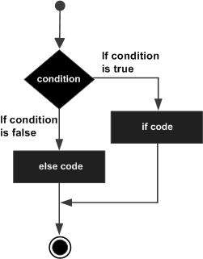
举例：
else 后面还可以继续判断：
logFC = 3.4
if(logFC > 1){
print("gene high expression")
print(paste0("LogFC = ",logFC))
}else if(loFC < -1){
print("gene low expression")
print(paste0("LogFC = ",logFC))
} else{print("There was no difference in gene expression")}
如果布尔表达式求值为真(true)，那么将执行if语句中的代码块，否则将执行else语句中的代码块。
x <- c("Bio","Info","Cloud","BioInfoCloud")
if("BioInfoCloud" %in% x) {
print("BioInfoCloud is found")
} else {
print("BioInfoCloud is not found")
}
else不是必须的，如果只需要在某条件成立时执行某个任务，那么只要使用if语句就可以了。如果条件不止一个/不止两个的时候，可以添加一个/多个 else if语句，但最后必须以else结尾。一个if语句可以跟随一个可选的else if...else语句，这对使用单个if...else else语句来测试各种条件非常有用。当使用if，else if, else语句时要注意几点。
if语句可以有零个或一个else，但如果有else if语句，那么else语句必须在else if语句之后。if语句可以有零或多else if语句，else if语句必须放在else语句之前。当有一个else if条件测试成功，其余的else...if或else将不会被测试。
语法
在R中创建if...else if...else语句的基本语法是：
if(boolean_expression 1) {
// Executes when the boolean expression 1 is true.
} else if( boolean_expression 2) {
// Executes when the boolean expression 2 is true.
} else if( boolean_expression 3) {
// Executes when the boolean expression 3 is true.
} else {
// executes when none of the above condition is true.
}
给一个案例：
x <- c("what","is","truth")
if("Truth" %in% x) {
print("Truth is found the first time")
} else if ("truth" %in% x) {
print("truth is found the second time")
} else {
print("No truth found")
}
2. ifelse¶
用法： ifelse(条件，执行语句1，执行语句2)
举例：
3. switch语句¶
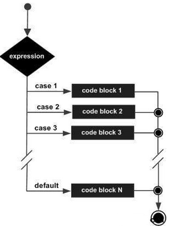
用法：
举例：
六.循环结构¶
在编程的时候，当我们需要执行一段代码多次时就不可能重复输入该代码多次，这就有了循环编程结构。一般来说，语句按顺序执行。首先执行函数中的第一个语句，然后执行第二个语句，依此类推。无论是R还是其他编程语言，都提供了允许更复杂的执行路径的各种控制结构。同时，循环语句允许我们多次执行语句或语句组，今天，我们来看下R语言中循环语句。
R编程语言提供的几种类的循环来处理循环需求：
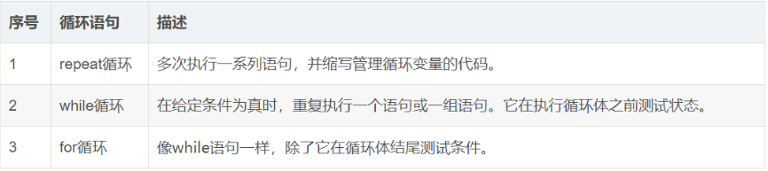
1.repeat循环¶
重复(repeat)循环一次又一次执行相同的代码，直到满足停止条件，来看下在R语言中创建重复(repeat)循环的基本语法：
commands就是要重复执行的代码，condition就是给定重复条件。
示例：
bio = 1
repeat {
print("WeChat Official Acount ：MedBioInfoCloud")
bio = bio +1
if(bio>5) {
break
}
}
执行上面代码会有以下结果：
[1] "WeChat Official Acount ：MedBioInfoCloud"
[1] "WeChat Official Acount ：MedBioInfoCloud"
[1] "WeChat Official Acount ：MedBioInfoCloud"
[1] "WeChat Official Acount ：MedBioInfoCloud"
[1] "WeChat Official Acount ：MedBioInfoCloud"
2.while循环¶
while循环将一遍又一遍地执行相同的代码，直到满足停止条件，来看下在R语言中创建while循环的基本语法：
流程图如下：
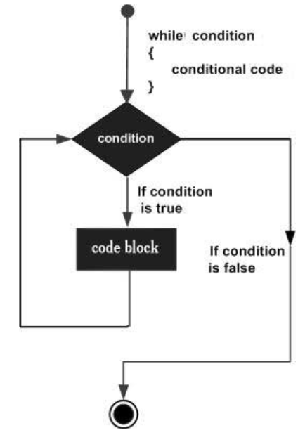
while循环一个关键问题是循环可能不会运行，并且当条件被测试并且结果为假时，循环体将被跳过，并且while循环之后的第一个语句将被执行，出现这个问题，就是因为while循环首先测试条件满足了才执行循环体中的语句。来看示例：
bioinfo = c("WeChat Official Acount",":","MedBioInfoCloud")
bio = 1
while(bio<5){
print(bioinfo)
bio = bio+1
}
代码运行结果：
[1] "WeChat Official Acount" ":" "MedBioInfoCloud"
[1] "WeChat Official Acount" ":" "MedBioInfoCloud"
[1] "WeChat Official Acount" ":" "MedBioInfoCloud"
[1] "WeChat Official Acount" ":" "MedBioInfoCloud"
3.for循环¶
for循环是一种重复控制结构，可以让我们有效地编写一个需要执行特定次数的循环，来看在R语言中创建for循环的基本语法：
流程图如下：
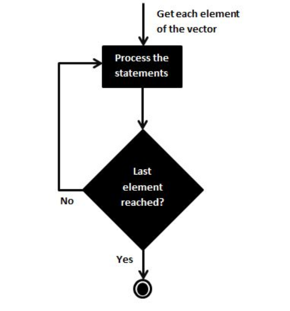
R编程中的for循环特别灵活，因为它们不限于整数，甚至不限于输入的数字。我们可以传递字符向量，逻辑向量，列表或表达式，来看示例感受下：
> biovector = c("bio","info","cloud")
> for(x in biovector){
print(x)
}
[1] "bio"
[1] "info"
[1] "cloud"
七.利用R操作系统文件¶
Windows系统下的文件操作，包括创建文件夹，创建文件，删除文件，复制文件等操作。可通过getwd()获取当前工作路径，setwd()设置工作路径。需要注意的是，在R中，工作路径中的"\"得用"\"或"/"。"."代表当前工作目录，".."代表上一级工作目录。
#创建一个文件fileA.txt,文件内容是:微信公众号,\n相当于回车
cat("微信公众号\n",file="fileA.txt")
#创建一个文件fileB.txt,文件内容是MedBioInfoCloud,\n相当于回车
cat("MedBioInfoCloud\n",file="fileB.txt")
#创建一个文件folder.txt, 注意会覆盖原来的文件
file.create("folder.txt")
#将文件B的内容附到A内容的后面，注意没有空行
file.append("fileA.txt", "fileB.txt")
dir.create("BioInfo") #创建名为BioInfo的文件夹,如果文件夹存在，会发出警告
file.show("fileA.txt") #新开工作窗口显示文件A的内容
#复制文件A保存为C文件，同一个文件夹
file.copy("fileA.txt", "fileC.txt") #fileC.txt存在，无法复制
file.copy("fileA.txt", "fileC.txt",overwrite = T) #如果文件覆盖文件
dir.create("med") #创建名为med的文件夹
file.copy(c("fileA.txt", "fileB.txt"), "med") #将文件夹拷贝到med文件夹中
list.files("med") #查看文件夹med中的文件名
dir()
dir(path = ".\\",pattern="txt$")#查看特定格式的文件
unlink("med", recursive=F) #如果文件夹med为空，删除文件夹med
unlink("med", recursive=T) #删除文件夹med，如果其中有文件一并删除
file.remove("fileA.txt","fileB.txt","fileC.txt") #移除三个文件
我们还可以通过rm()和remove()函数移除当前环境中所有的数据：
除了创建文件夹，创建文件，删除文件，复制文件等操作外，我们还会经常解压和打包文件，这些文件的格式：zip，tar.gz，.gz 与 .bz2。
若要压缩文件，就直接在 zip() 函数的第一个参数里面输入压缩后的文件名，第二个参数输入压缩前的文件名。而解压文件就更简单了，直接利用 unzip() 里面加上需要解压的文件名称即可。tar.gz压缩用tar()，解压用untar()，同 .zip 后缀的压缩文件。.gz 与 .bz2这两个压缩文件与前面的相比，是最与众不同的，因为这两种后缀的文件，可以称之为压缩文件，也可以直接作为一个数据文件，当成 data frame 直接进行读取。因为其本身就是数据文件。tar.gz格式压缩文件很常见，特别是生信数据文件，比如TCGA数据库中下载的数据很多都是这个格式的压缩文件。
R 中默认没有解压相关文件的函数，需要使用一个包：R.utils，然后如下述代码所示，利用 gunzip() 函数，即可解压。
安装包并加载，安装这个包的时候不要选择国内镜像，反正我也不知道为啥，选择国内镜像会报错。
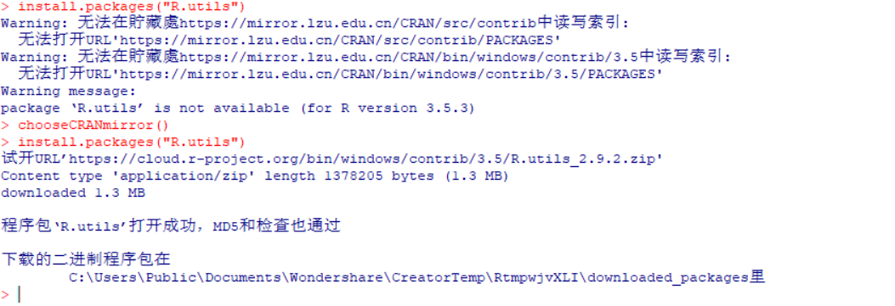
注意是这个函数里面多了一个 remove = 参数，选择 TRUE 就会只保留解压后的文件，原压缩包会被删除，默认就是 TRUE。
解压之后，我们可以直接用 read.table() 对其进行读取。其实，不解压也可以读取。关于读取，下一章介绍。
八.数据的输入与输出¶
1.数据的输入¶
我们常见的存储数据的文件格式有txt，csv，tsv，xls等，作为生物信息学领域中还有很多其他格式的文件，比如counts、cel、xml、json、bed，fastq等格式的文件。我们介绍一下简单，常见的文件输入输出。
我们可以手动输入信息，readline()函数提示用户输入：
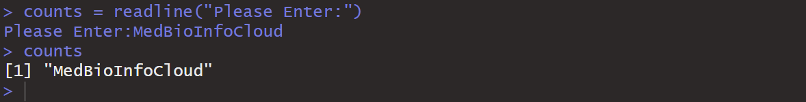
在R语言中，可以使用scan()函数从键盘中获取数据。
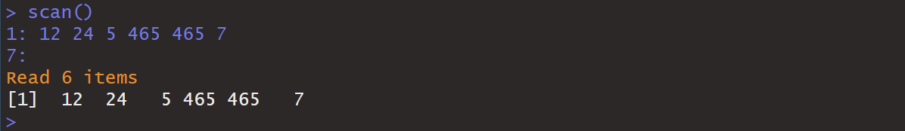
上面2个函数不常用，只是让大家知道R中有这么一些基本的函数，在数据分析中，我们常用read.table()，read.csv()函数读入文件。
read.table(file, header = FALSE, sep = "", quote = "\"'",
dec = ".", numerals = c("allow.loss", "warn.loss", "no.loss"),
row.names, col.names, as.is = !stringsAsFactors,
na.strings = "NA", colClasses = NA, nrows = -1,
skip = 0, check.names = TRUE, fill = !blank.lines.skip,
strip.white = FALSE, blank.lines.skip = TRUE,
comment.char = "#",
allowEscapes = FALSE, flush = FALSE,
stringsAsFactors = default.stringsAsFactors(),
fileEncoding = "", encoding = "unknown", text, skipNul = FALSE)
read.csv(file, header = TRUE, sep = ",", quote = "\"",
dec = ".", fill = TRUE, comment.char = "", ...)
重要参数：
file：file是一个带分隔符的ASCII文本文件。
header：一个表示文件是否在第一行包含了变量的逻辑型变量。如果header设置为TRUE，则要求第一行要比数据列的数量少一列。
sep：sep分开数据的分隔符。默认sep=""
stringsAsFactors ：逻辑值，标记字符向量是否需要转化为因子，默认是TRUE。
下面是视频中案例代码：
rm(list=ls())
#设置工作路径
setwd("F:\\Rcourse\\files")
COAD_Exp1 = read.table("TCGA-COAD-Exp.txt",header = T,
sep = "\t",check.names = F)
clin = read.table("TCGA-COAD-clinical.tsv",header = T,
sep = "\t",check.names = F)
#读入转录组数据的counts格式文件
oneEXP = read.table("htseq.counts",header = F,
sep = "\t",check.names = F)
COAD_Exp2 = read.csv('TCGA-COAD-Exp.csv',header = TRUE,check.names = F)
#其实read.table也可以读入csv格式的文件,只需要将sep设置为","。
COAD_Exp3 = read.table('TCGA-COAD-Exp.csv',sep = ",",
header = TRUE,check.names = F)
对于Excel软件格式的文件，需要安装包readxl
利用read_excel()函数读入数据，自己可以去试试，这里就不举例啦。
记住一点，只要能用记事本打开的文件，都可以用read.table()函数读取，比如生信数据中常见的bed文件。
除了上面常见的文件以外，做为研究肿瘤癌症等相关的同学来说，TCGA数据挖掘中，我们还比较常见的文件有样本信息和 文件信息对应的json文件，临床数据的xml文件等。
JSON(JavaScript Object Notation) 是一种轻量级的数据交换格式。 易于人阅读和编写。同时也易于机器解析和生成。
我们先介绍json文件的处理，json文件的处理需要rjson包，我们可以利用该包中的fromJSON函数快速读取json文件信息，读取的数据是一个列表，我们可以提取我们要的数据，重要的可能就是样本的Barcode和文件名称的对应关系。
library(rjson)
jsonFile <- fromJSON(file=".\\TCGA-COAD.json")
SamplesInfo <- data.frame(filesName = c(),TCGA_Barcode = c())
for(i in 1:length(jsonFile)){
TCGA_Barcode <- jsonFile[[i]][["associated_entities"]][[1]][["entity_submitter_id"]]
file_name <- jsonFile[[i]][["file_name"]]
SamplesInfo <- rbind(SamplesInfo,data.frame(filesName = file_name,TCGA_Barcode = TCGA_Barcode))
}
TCGA临床数据文件有xml格式的和tsv格式的，tsv我们前面有介绍，直接读入就行，而xml文件是一个病人数据一个文件，xml文件数据的提取需要XML包。xmlParse()函数读入xml文件，xmlRoot()函数获取根目录，xmlToDataFrame()函数获取获取根目录内的数据，转化为数据框。其实，要弄清楚xml文件格式需要花很多时间的，但对于我们分析TCGA数据来说，xml格式的临床数据只有一个根目录 "tcga_bcr"，xmlName()函数可以查看根目录名称。
下面是提取TCGA数据库中xml文件中临床数据的代码：
#处理XML文件
#install.packages("XML")
library("XML")
library("methods")
xmlFil = dir("XML",full.names = T)
result <- xmlParse(file = xmlFil[1])
rootnode <- xmlRoot(result)
xmldataframe <- xmlToDataFrame( rootnode[2])
xml文件是一个病人数据一个文件，我们可通过一个循环，就可以不断读取了。
2.数据的输出¶
学会了数据的输入，那么对于输出就简单多了，输入用read.table()，read.csv()函数读入文件，输出就有对应的write.table()，write.csv()函数来输出文件。
write.table(x, file = "", append = FALSE, quote = TRUE, sep = " ",
eol = "\n", na = "NA", dec = ".", row.names = TRUE,
col.names = TRUE, qmethod = c("escape", "double"),
fileEncoding = "")
常用参数解释：
x： 要保存的对象，通常为一个矩阵或数据帧对象，否则会尝试进行强制转换为数据帧对象再进行保存。
file： 要保存的文件名或打开的一个连接，默认的""表示输出到屏幕。
append： boolean类型，默认False，表示是否为追加模式，只有保存的文件名已存在时有效。
sep： 指定分隔符，默认是空格。
quote： boolean类型，默认为TRUE，表示是否使用引号包围内容。
dec： 小数点的表示，默认为’.’。
na： 缺失值（NA值）的表示，默认为”NA”。
eol： 行结束符，默认为’\n’
下面是write.csv(0函数输出我们前面读入的xml文件的数据。row.names = F表示不输出行名。
write.csv(xmldataframe,'xmldataframe.csv',row.names = F)
exp = COAD_Exp[,c(1:11,(ncol(COAD_Exp)-9):ncol(COAD_Exp))]
write.table(exp,"pExp.txt",sep = "\t",row.names = F)
其他的大家自己去多练习啦，举一反三。
不过，重要的是，我们还需要介绍R中可以通过save()函数保存为.Rdata文件，通过load()函数将数据加载到R中。
九.数据的预处理与重构¶
1.数据的常见操作¶
数据按行合并用rbind()函数，按列合并用cbind我们首先读入pExp.txt文件。第一列是基因名称，在后续分析中，我们需要将其作为行名，然后将这一列数据删除，那样，数据框中所以的值都是数值啦，但是，这个数据框中，我可通过rownames函数对数据框重命名行名的时候发生了错误，原因是不允许有重复的行名，所以我们需要去重。
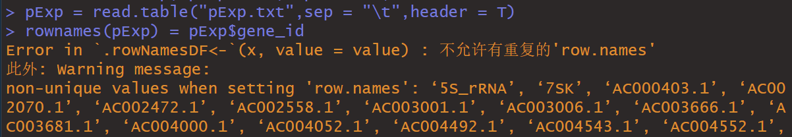
按照gene_id列进行排序，我们可以看见很多基因是重的。
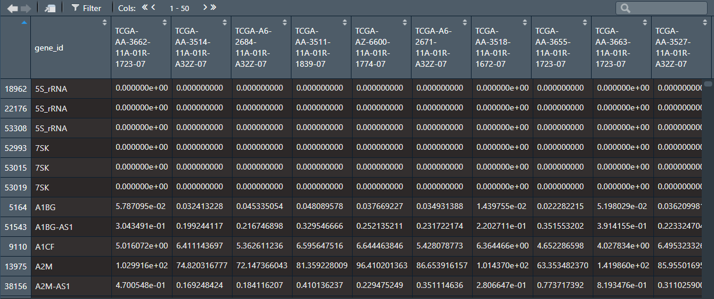
可以利用duplicated()函数去掉重复的基因，这里我们只保留一行，其他重复的行我们删除。
#根据gene_id列建立索引
index<-duplicated(COAD_Exp$gene_id)
#我们想要的那一行为FALSE，所以要取反。
newExp <- COAD_Exp[!index,]
但删除重复行似乎不太可取，但如果每行数据都一样的时候，就可以取一行就行。TCGA数据库中的数据，好多经常就是重复的，比如下载的tsv格式的临床数据，每行都重复一次。如果不是重复数据，我们可以对重复的行取均值。数据框不允许行名重复，其实矩阵也是一样的，只是矩阵遇到行名或者列名重复的时候，会自动在名前加“X，名后面进行编号“.1",".2"。所以我们可以先将数据框转化为矩阵，再重命名行名。
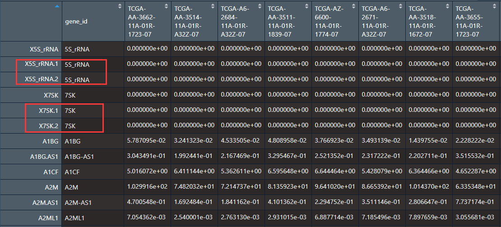
然后我们借助limma包的avereps()函数去重，并取均值。这是我们第一次用到Bioconductor库中包，我们就先介绍一下这个包的安装：
if (!requireNamespace("BiocManager", quietly = TRUE))
install.packages("BiocManager")
BiocManager::install("limma")
然后我们可以删除第一列，avereps()函数去重，并取均值。
我们可以在将其转化为数据框：
在生信分析中，往往会处理很多数据，比如转录组的数据，在处理数据的过程中，样本往往会包含缺失值。我们有必要对缺失值进行处理，这样不但可以降低预测分析的数据偏差，而且还可以构建有效的模型。
在R中，缺失值通常以"NA"表示，判断数据是否存在缺失值，通常使用函数is.na()，该函数是判断缺失值的最基本函数，可用于判断不同的数据对象，比如向量，列表和数据框。如果存在缺失值，返回TRUE，反正为FALSE。
NewExp2这个数据框中没有缺失值。
is.na()判断数据集中是否存在缺失值，complete.cases()函数也可以判断数据集的缺失值。与is.na()不同。该函数判断数据集的每一行中是否有缺失值，如果不存在反回TRUE，存在返回FALSE。
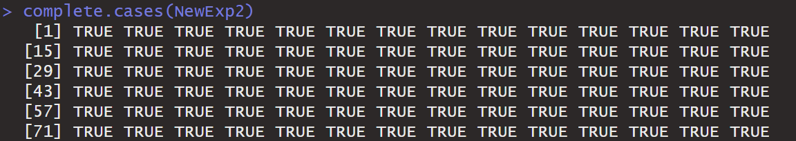
为了演示一下数据，我将NewExp2这个数据框中的第一行第一列的值设置为NA，查看缺失值情况，发现第一个值为FALSE，说明第一行有缺失值。
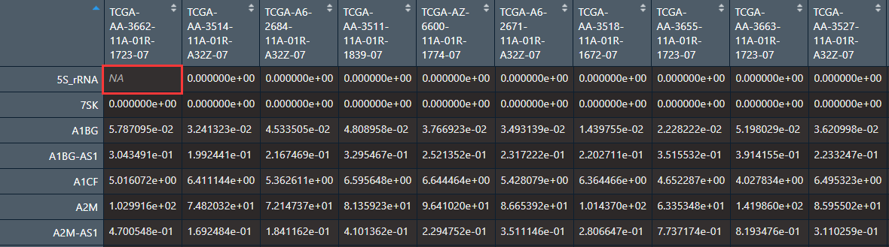
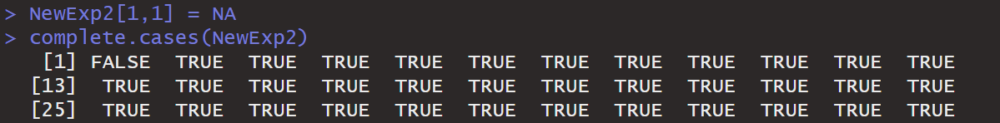
那么我们如何处理具有缺失值的数据呢。缺失值常用的几种处理方法：删除法，替换法和插补法。不同的方法对应不同类型的缺失值。
如果缺失值的比例很小，且不影响整体的数据结构，即缺失值类型是完全随机缺失时，可以考虑将缺失值删除，该方法操作非常简单，使用函数na.omit()就可以将含有缺失值的行删除。其函数的基本书写格式为:
其中object即为需要处理的数据对象。下面是我们处理NewExp2数据的缺失值。我们先看NewExp2数据的缺失值个数。
个数为1，也的确是1，因为我们自己设置的就一个。我们删除有缺失值的行，并赋值给一个新变量NewExp3。查看NewExp3，有缺失值的的5S_rRNA这一行就没有了。
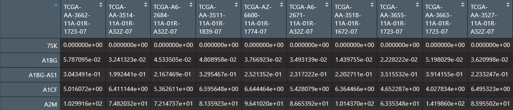
除了na.omit()函数外，还可以利用complete.cases函数来删除含有缺失值的行。
直接删除含有缺失值的行记录的代价和风险较大，故我们可以考虑将缺失值部分替换掉，如用均值去替换，即均值替换法，该方法根据变量的不同类型选择不同的替换，对数值型变量采用均值替换，对非数值型变量采用众数替换。
我们用DMwR包中的数据演示一下：
> mean(complete.cases(algae))
[1] 0.92
> algae[is.na(algae)]<-mean(complete.cases(algae))
> sum(!complete.cases(algae))
[1] 0
但是均值替换法还是存在一些问题，因为该方法适用于处理完全随机缺失数据，且会改变整体数据的统计性质，比如方差变小，存在偏差等，因此在在实践中并不常用。
实战中常用的方法是插补法，随机插补的思想类似，利用非缺失数据的均值或者随机数来填补缺失值，多重插补的主要思想是:利用蒙特卡洛模拟法(MCMC)将原始数据集插补成几个完整数据集，在每个新数据集中利用线性回归(lm)或广义线性回归(glm)等方法进行插补建模，再将这些完整的模型整合到一起，评价插补模型的优劣并返回完数据集。
该方法主要利用mice包中的函数mice进行，其函数的基本书写格式为：
mice(data,m=5,method=vector("character",length =ncol (data)),seed = NA,
defaultMethod = c("pmm","logreg","polyreg","polr"),....)
参数介绍:
data一个包含完整数据和缺失数据的矩阵或数据框，其中各缺失数据用符号NA表示;
m:指定的多正插补数，默认值为5;
method:一个字符串，或者长度与数据集列数相同的字符串向量，用于指定数据集中的每一列采用的插补方法，单一字符串指定所有列用相同方法插补，字符串向量指定不同列采用不同方法插补，默认插补法取决需要插补的目标列，并由defaulmethod指定参数;
seed:一个整数，用于函数set.seed()的参数，指定产生固定的随机数的个数，默认值为NA;
defaultMethod:一个向量，用于指定每个数据集采用的插补建模方法，可供选者的方法有多种，“pmm”表示用预测的均值匹配，“logreg”表示用逻批回归拟合，“polyreg”表示多项式拟合，“polr”表示采用比例优势模型拟合等。
需要注意的是:选择不同的插补建模方法对数据有不同的要求，回归法适用于数值型数据集，“pmm”对数据格式没有特殊要求。在实战过程中我们还会用到函数pool()、函数compute()等。这里就先做个了解吧。毕竟还没有开始统计篇的教程。
2.数据处理之reshape2包¶
reshape2是用来做数据处理的拓展包，它可以用来实现宽格式数据与长格式数据之间的互转。如果你熟悉结构化数据库查询，那你一定知道列转行与行转列，我这里所说的宽长数据之间互转与之类似；如果你不熟悉的也没关系，它很简单，接着往下看你就能很快熟悉并掌握了。首先我们通过一个数据集来解释什么是长宽数据。
options(stringsAsFactors = F)
install.packages("reshape2")
library(reshape2)
data = data.frame(Patient=c('Patient1','Patient2','Patient3','Patient4'),
t0=c(189,170,135,145), t1=c(160,140,137,120),
t2=c(156,145,133,140), t3=c(160,155,140,120))
melt()函数融合数据，依次对各个维度的名称进行组合，将数据进行向量化。melt是数据融合的意思，它做的工作其实就是把数据由“宽”转“长”。melt则可以根据不同的数据结构，进行不同的数据融合操作。 如果数据是array或者matrix，melt函数会将其索引拆分为不同的变量，其中的数值为索引对应的取值。
id.vars:被当做维度的列变量，每个变量在结果中占一列。
measure.vars:被当做观测值的列变量，在结果中占一列。
> ldata = melt(data,id.vars = "Patient")
> ldata
Patient variable value
1 Patient1 t0 189
2 Patient2 t0 170
3 Patient3 t0 135
4 Patient4 t0 145
5 Patient1 t1 160
6 Patient2 t1 140
7 Patient3 t1 137
8 Patient4 t1 120
9 Patient1 t2 156
10 Patient2 t2 145
11 Patient3 t2 133
12 Patient4 t2 140
13 Patient1 t3 160
14 Patient2 t3 155
15 Patient3 t3 140
16 Patient4 t3 120
Patient被当做维度的列变量，每个变量在结果中占一列，默认将所有观测值的列变量列出，我们将"t3"当做观测值的列变量，在结果中占一列。
> ldata2 = melt(data,id.vars ="Patient",measure.vars = "t3")
> ldata2
Patient variable value
1 Patient1 t3 160
2 Patient2 t3 155
3 Patient3 t3 140
4 Patient4 t3 120
我们将"t0","t3"当做观测值的列变量，在结果中占一列。
dcast()函数用于读取已融合的数据框（d是指data frame），并使用formula和用于整合数据的函数把数据集重塑成任意形状：
dcast(data, formula, fun.aggregate = NULL, ..., margins = NULL,
subset = NULL, fill = NULL, drop = TRUE, value.var = guess_value(data))
data：已融合的数据框
formula：用于指定输出的结果集格式
fun.aggregate：用于指定聚合函数，对已聚合的数据执行聚合运算
margins：相当于透视表中的行总计和列总计
subset：选取满足一些特定值的数据，相当于Excel透视表的筛选。例如， subset =.（variable ==“length”)
fill：用于填充结构缺失的值，默认为将fun.aggregate应用于0长度向量的值
value：value列的名称
formula的格式：
rowvar1 + rowvar2 + …定义了要划掉的变量集合，以确定各行的内容，而colvar1 + colvar2 + …则定义了要划掉的、确定各列内容的变量集合。
> ldata4 = dcast(ldata3,Patient~variable)
> ldata4
Patient t0 t3
1 Patient1 189 160
2 Patient2 170 155
3 Patient3 135 140
4 Patient4 145 120
3.生信分析中长用的2个数据处理包¶
tidyverse是一个汇总包，用于数据清洗、转换、可视化等。其核心包有ggplot、readr、tibble、purrr、 tidyr 、dplyr、ggplot、forcats 和stringr8个，我们主要讲 tidyr 和dplyr这2个包。
3.1 tidyr包¶
地址：https://tidyr.tidyverse.org/
tidry包是把需要用的数据处理成标准而统一的数据框:
（1）数据框的变形
（2）处理数据框中的空值
（3）根据一个表格衍生出其他表格
（4）实现行或列的分割和合并
gather和spread函数将数据在长格式和宽格式之间相互转化，应用在比如稀疏矩阵和稠密矩阵之间的转化;separate和union方法提供了数据分组拆分、合并的功能，应用在nominal数据的转化上。
R将整洁数据定义为：每个变量的数据存储在自身的列中，每个观测值的数据存储在其自身的行中。整洁数据是进行数据再加工的基础。
tidyr包主要涉及：
1)缺失值的简单补齐
2)长形表变宽形表与宽形表变长形表
gather-把宽度较大的数据转换成一个更长的形式，它类比于从reshape2包中融合函数的功能。
spread-把长的数据转换成一个更宽的形式，它类比于从reshape2包中铸造函数的功能。
gather()相反的是spread()，前者将不同的列堆叠起来，后者将同一列分开
3)列分割与列合并
separate－将一列按分隔符分割为多列
unite－将多列按指定分隔符合并为一列
tidyr包：（gather（宽数据转为长数据）、spread（长数据转为宽数据）、unit（多列合并为一列）、separate（将一列分离为多列））
宽数据转为长数据gather()函数：首先我们通过一个数据集来解释什么是宽数据。医学研究宽数据和长数据都很常见，最常见的是医学随访的数据，往往在随访期内，多次策略。比如，测量Patient1、Patient2、Patient3、Patient4四人用某种治疗药物之后，治疗前、治疗后1周、治疗后2周，治疗后3周的收缩压值。可以得到两种结构的数据库。
data<- data.frame(Patient=c('Patient1','Patient2','Patient3','Patient4'),
t0=c(189,170,135,145), t1=c(160,140,137,120),
t2=c(156,145,133,140), t3=c(160,155,140,120))
像data这样的我们将其称为宽数据
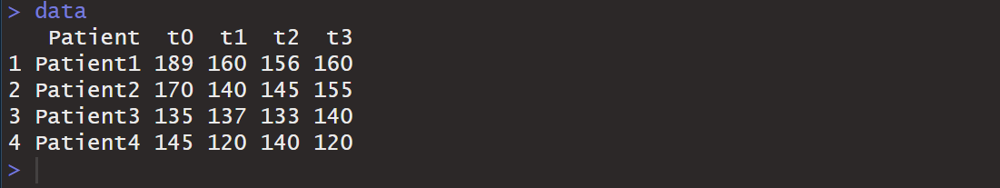
gather()函数可以将这样的宽数据，转换为长数据，语法如下：
data：需要被转换的宽形表
key：将原数据框中的所有列赋给一个新变量key
value：将原数据框中的所有值赋给一个新变量value
…：可以指定哪些列聚到同一列中
na.rm：是否删除缺失值
我们将上面的data转换为上数据：
> ldata = gather(data,time,SBP,t0,t1,t2,t3) #time为四个时间点，value为收缩压
> ldata
Patient time SBP
1 Patient1 t0 189
2 Patient2 t0 170
3 Patient3 t0 135
4 Patient4 t0 145
5 Patient1 t1 160
6 Patient2 t1 140
7 Patient3 t1 137
8 Patient4 t1 120
9 Patient1 t2 156
10 Patient2 t2 145
11 Patient3 t2 133
12 Patient4 t2 140
13 Patient1 t3 160
14 Patient2 t3 155
15 Patient3 t3 140
16 Patient4 t3 120
宽数据可以转换为长数据，那么长数据也是可以转换为宽数据的，有时，为了满足建模或绘图的要求，往往需要将长形表转换为宽形表，或将宽形表变为长形表。如何实现这两种数据表类型的转换。使用spread()函数实现长表转宽表，语法如下：
data：为需要转换的长形表
key：需要将变量值拓展为字段的变量
value：需要分散的值
fill：对于缺失值，可将fill的值赋值给被转型后的缺失值
我们将刚刚转换的ldata又转换为宽数据
> wdata = spread(ldata,time,SBP,fill = NA)
> wdata
Patient t0 t1 t2 t3
1 Patient1 189 160 156 160
2 Patient2 170 140 145 155
3 Patient3 135 137 133 140
4 Patient4 145 120 140 120
unit()可以合并不同的变量值，特别是两个字符串变量，可以采用一定的方式进行合并。unite的调用格式如下：
data：为数据框
col：被组合的新列名称
…：指定哪些列需要被组合
sep：组合列之间的连接符，默认为下划线
remove：是否删除被组合的列
下面是我们将ldata中Patient和time列合并：
> udata = unite(ldata,Ptime,Patient,time,sep = "-",remove=F)
> udata
Ptime Patient time SBP
1 Patient1-t0 Patient1 t0 189
2 Patient2-t0 Patient2 t0 170
3 Patient3-t0 Patient3 t0 135
4 Patient4-t0 Patient4 t0 145
5 Patient1-t1 Patient1 t1 160
6 Patient2-t1 Patient2 t1 140
7 Patient3-t1 Patient3 t1 137
8 Patient4-t1 Patient4 t1 120
9 Patient1-t2 Patient1 t2 156
10 Patient2-t2 Patient2 t2 145
11 Patient3-t2 Patient3 t2 133
12 Patient4-t2 Patient4 t2 140
13 Patient1-t3 Patient1 t3 160
14 Patient2-t3 Patient2 t3 155
15 Patient3-t3 Patient3 t3 140
16 Patient4-t3 Patient4 t3 120
separate()函数可将一列拆分为多列，一般可用于日志数据或日期时间型数据的拆分。语法如下：
separate(data, col, into, sep = "", remove = TRUE,
convert = FALSE, extra = "warn", fill = "warn", …)
data：为数据框
col：需要被拆分的列
into：新建的列名，为字符串向量
sep：被拆分列的分隔符
remove：是否删除被分割的列
> sdata = separate(udata, Ptime, c("Patient","time"), sep = "-", remove = TRUE)
> sdata
Patient time SBP
1 Patient1 t0 189
2 Patient2 t0 170
3 Patient3 t0 135
4 Patient4 t0 145
5 Patient1 t1 160
6 Patient2 t1 140
7 Patient3 t1 137
8 Patient4 t1 120
9 Patient1 t2 156
10 Patient2 t2 145
11 Patient3 t2 133
12 Patient4 t2 140
13 Patient1 t3 160
14 Patient2 t3 155
15 Patient3 t3 140
16 Patient4 t3 120
可见separate()函数和unite()函数的功能相反。
pivot_vider()用于把长格式数据转换为宽格式。
pivot_longer()用于把宽格式数据转换为长格式。
3.2 dplyr包¶
select()用列名作参数来选择子数据集。dplyr包中提供了些特殊功能的函数与select函数结合使用， 用于筛选变量，包括starts_with，ends_with，contains，matches，one_of，num_range和everything等。用于重命名时，select()只保留参数中给定的列，rename()保留所有的列，只对给定的列重新命名。原数据集行名称会被过滤掉。
TCM = read.table("TCGA-COAD-Mixture.txt",header = T,
sep = "\t",check.names = F,row.names = 1)
colnames(TCM)
install.packages("dplyr")
library(dplyr)
#选取变量名前缀包含B cells的列
Bcell = select(TCM, starts_with("B cells"))
#选取变量名前缀包含T cells的列
Tcell = select(TCM, starts_with("T cells"))
#选取变量名后缀包含naive的列
naiveCell = select(TCM, ends_with("naive"))
#选取变量名后缀不包含naive的列
noNaiveCell = select(TCM, -ends_with("naive"))
#选取变量名中包含NK的列
NKCell = select(TCM, contains("NK"))
#选取变量名中不包含NK的列
noNKCell = select(TCM, -contains("NK"))
#正则表达式匹配，返回变量名中包含-的列
mCell = select(TCM, matches(".-."))
#直接选取列
sBcell = select(TCM, "B cells naive","B cells memory")
#返回除"B cells naive","B cells memory"之外的所有列
noBcell = select(TCM, "B cells naive","B cells memory")
#使用冒号连接列名，选择多个列
allCell = select(TCM, "B cells naive":"Neutrophils")
#选择字符向量中的列，select中不能直接使用字符向量筛选，需要使用one_of函数
vars <- c("B cells naive", "T cells CD4 naive")
naiveCell = select(TCM, one_of(vars))
#返回指定字符向量之外的列
noNaiveCell = select(TCM, -one_of(vars))
#返回所有列，一般调整数据集中变量顺序时使用
select(TCM, everything())
#调整列顺序，把Neutrophils列放到最前面
NeuFirst = select(TCM, Neutrophils, everything())
filter() 函数可以按给定的逻辑条件筛选出符合要求的子数据集, 代码简洁, 同时也支持对同一对象的任意个条件组合（表示AND时要使用&或者直接使用逗号），返回与.data相同类型的对象。原数据集行名称会被过滤掉。
diff = read.table("GeneDiffExpResult.txt",header = T,
sep = "\t",check.names = F)
colnames(diff)
#过滤出logFC < -1的行
downgene = filter(diff, logFC < -1)
#过滤出logFC > 1 并且
upgene = filter(diff, logFC > 1)
sigupgene = filter(diff, logFC > 1 & pValue < 0.05)
#(logFC > 1 | logFC < -1) 可以用去绝对值的函数abs
siggene = filter(diff, (logFC > 1 | logFC < -1) & pValue < 0.05)
siggene = filter(diff, abs(logFC) > 1 & pValue < 0.05)
需要注意的是过滤后行名会消失，可以事先把行名添加为1列的数据。
arrange()按给定的列名依次对行进行排序，默认是按照升序排序，对列名加 desc() 可实现倒序排序。也需要注意原数据集行名称会被过滤掉。
#以logFC和disp联合升序排序
sordiff = arrange(diff, logFC, pValue)
#以logFC降序排序
sordiff = arrange(diff, logFC,decreasing = TRUE)
mutate()和transmute()函数对已有列进行数据运算并添加为新列。mutate()返回的结果集会保留原有变量，transmute()只返回扩展的新变量。原数据集行名称会被过滤掉。
#添加新列diffTime
diff2 = mutate(diff,diffTime = log2(treatMean/conMean))
diff3= transmute(diff,diffTime = log2(treatMean/conMean))
十.函数¶
前面一直提到函数，但是并没有说R中的函数是什么，这一章就讲解函数。一个函数是组合在一起以执行特定任务的一组语句。R具有大量内置函数，当然用户也可以创建自己的功能。在R中，函数是一个对象，所以R解释器能够将控制传递给函数，以将参数传递函数完成操作。该函数又执行其任务并将控制权返回给解释器以及可存储在其他对象中的任何结果。R语言的各种包或第三方包中提供了大量的函数帮助我们解决实际中的各种问题。有时，我们还需要自己编写函数来实现自己的实际需求。
使用关键字function来创建一个R函数。R函数定义的基本语法如下：
函数组件函数中有许多不同的部分，它们是：
函数名称 - 这是函数的实际名称。它以R名称作为对象存储在R环境中。
参数 - 参数是一个占位符。调用函数时，将值传递给参数。参数是可选的; 也就是说，函数可能不包含参数。参数也可以有默认值。
函数体 - 函数体包含一组语句，用于定义函数的作用。
返回值 - 函数的返回值是要评估/计算的函数体中的最后一个表达式。
R具有许多内置函数，可以直接在程序中调用，而不必定义它们。我们还可以创建和使用自己创建的函数，称为用户定义函数。
1.内置函数和用户自定义的函数¶
内置函数的简单示例有：seq()，mean()，max()，sum(x)和paste(...)等。它们可在用户编写的程序直接调用。我们可以在R中创建用户定义的函数。它们用于实现用户想要的功能，当创建了这些用户自定义函数后，就可以像内置函数那样使用。这里就给大家写一个函数，大家就知道函数怎么创建，怎么调用了。我们知道TCGA数据库中病人的Barcode条码：

Label |
Identifier for |
解释 |
|---|---|---|
Project |
Project name |
来自哪个项目: 如TCGA、TARGET等等 |
TSS |
Tissue source site |
样品来自哪个组织机构：01 代表International Genomics Consortium, 更多见：TSS |
Participant |
Study participant |
样品唯一编号(可以理解为一个病人唯一编号） |
Sample |
Sample type |
样品来自人体组织类型，如：01代表Primary Solid Tumor， 更多见：SampleType |
Vial |
Order of sample in a sequence of samples |
一份样品被分割成好几份，表示第几份，通常是A-Z编号 |
Portion |
Order of portion in a sequence of 100-120 mg sample portions |
每份样品再分割成不同的小样品：01-99等等编号，代表第几份 |
Analyte |
Molecular type of analyte for analysis |
实验数据来源分子类型，如R代表 RNA，D代表DNA等等，更多见：Portion / Analyte Codes |
Plate |
Order of plate in a sequence of 96-well plates |
96孔序列中板的顺序，4个数字组成 |
Center |
Sequencing or characterization center that will receive the aliquot for analysis |
数据由哪个机构分析：如 01代表The Broad Institute GCC,更多见：Center |
Sample位置的，01-09表示肿瘤组织，10-19表示对照样本，我们写一个函数用来区分肿瘤和对照样本的Barcode。
stringAsFactors=FALSE
setwd("F:\\Rcourse\\files")
pExp = read.table("pExp.txt",header = T,
sep = "\t",check.names = F)
id = colnames(pExp)
id = id[-1]
distSamp <- function(Barcode){
norID = c()
tumorID = c()
for(id in Barcode){
num = as.numeric(substr(unlist(strsplit(id,"-"))[4],1,1))
if(num == 1){
norID = c(norID,id)
}else if(num ==0){
tumorID = c(tumorID,id)
}else{}
}
sortBarcode = c(norID,tumorID)
return(sortBarcode)
}
2.提升R的运算速度的一些函数¶
当我们利用 R 语言处理大型数据集时，for 循环语句的运算效率非常低。有许多种方法可以提升你的代码运算效率，R对常见的运算如矩阵乘积，进行过专门的优化。那么，我们应当有意识将算法中的相关部分转用R优化过的内置函数处理，从而降低计算成本。因此在实际应用中，数据处理人员常常利用apply族函数替代for循环以便于在一定程度上提升R语言数据处理速度，除此之外，该方法还可以在一定程度上简化代码。虽然该方法非常有用，但是当你面对复杂的情形时，你需要灵活运用该函数。apply族函数包括apply(), lapply(), sapply(), vapply(),mapply(),rapply(), tapply()。在实际应用中，常常需要数据处理人员依据不同数据结构及数据处理目的采用不同apply族函数。
2.1 apply¶
apply函数只能用于处理矩阵类型的数据，也就是说所有的数据必须是同一类型。因此要使用apply函数的话，需要将数据类型转换成矩阵类型。
X: 表示数组或矩阵
MARGIN：表示以行为单位进行计算还是以列为单位：1表示以行为单位；2表示以列为单位；c(1,2)表示同时以行和列为单位进行计算。
FUN：在行或者列上进行运算的函数。
...：运算函数的参数。
我们首先读入上一章中的表达数据，并进行预处理，当复习前面的内容啦：
rm(list=ls())
stringsAsFactors = F
#
exp = read.table("F:\\Rcourse\\files\\pExp.txt",header = T,
check.names = F)
library(limma)
exp = as.matrix(exp)
rownames(exp) = exp[,"gene_id"]
exp = exp[,-1]
exp = avereps(exp)
expdf = as.data.frame(exp)
expdf = apply(exp,2,as.numeric) #行名会消失
rownames(expdf) =rownames(exp)
下面是expdf数据框的部分数据
如果我们要按行取平均值，如何计算？用for循环不断取行，在计算吗？效率太低。
#用for循环，时间长的怕人
expmean = data.frame(geneID = c(),expMean = c())
for(gene in rownames(expdf)){
expMean = data.frame(geneID = gene,expMean = mean(expdf[gene,]))
expmean = rbind(expmean,expMean)
}
我们用apply函数，速度就提升了好多
2.2 lapply()函数和sapply()函数¶
lapply和sapply函数可以用于处理列表数据和向量数据（vector/list）。lapply函数得到处理得到的数据类型是列表，而sapply函数得到处理的数据类型是向量。这两个函数除了在返回值类型不同外，其他方面基本完全一样。lapply很方便地把list数据集进行循环操作，此外，它还可以对data.frame数据集按列进行循环，但如果传入的数据集是一个向量或矩阵对象，那么直接使用lapply就不能达到想要的效果了，lapply会分别循环矩阵中的每个值，而不是按行或按列进行分组计算。
X: 表示列表或者向量
FUN：在行或者列上进行运算的函数。
...：运算函数的参数
simplify：逻辑值或者字符，用来确定返回值的类型：TRUE表示返回向量或矩阵；simplify= "array"返回数组。
USE.NAMES：确定结果的名字。
listdata = list(exp = expdf,Mean = apExpmean)
lapply(listdata, sum)
sapply(listdata, "[", c(2,1))#提取列表每一部分第二行第一列的数，并以向量形式返回
sapply(listdata, "[", c(2,1), simplify=F)#提取列表每一部分第二行第一列的数，并以列表形式返回
2.3 rapply()函数¶
rapply函数是lapply函数的循环版本。
object：列表
f：只有一个参数的函数。
classes：表示类名的字符型向量。
deflt：默认结果（如果how="replace"参数没用）
how：匹配三种可能参数，分别为unlist, replace, list。具体三种参数的作用，可以结合代码修改相应参数值，看输出结果的变化来理解参数的作用。
...：函数f的额外参数
2.4 tapply()函数¶
它通常会有三个参数，第一个参数代表数据，第二个参数表示如何对数据进行分组操作，第三个参数指定每一个分组内应用什么函数。也就是说tapply函数就是把数据按照一定方式分成不同的组，再在每一组数据内进行某种运算。
X：被计算的向量值。
INDEX：分类因子。
FUN：分组计算的函数。
...：函数的额外参数
simplify：逻辑值或者字符，用来确定返回值的类型。
2.5 vapply()函数¶
vapply函数类似于sapply函数，其主要区别为vapply函数可预先指定返回值的类型和名称。
X: 表示列表或者向量
FUN：在行或者列上进行运算的函数。
FUN.VALUE：指定返回值的类型和名称
USE.NAMES：确定结果的名字。
2.6 mapply()函数¶
函数mapply是函数sapply的变形版，mapply 将函数 FUN 依次应用每一个参数的第一个元素、第二个元素、第三个元素上。
FUN：在行或者列上进行运算的函数。
MoreArgs：FUN函数的其它参数。
simplify：逻辑值或者字符，用来确定返回值的类型。
USE.NAMES：确定结果的名字。
2.7 eapply函数¶
对一个环境空间中的所有变量进行遍历。如果我们有好的习惯，把自定义的变量都按一定的规则存储到自定义的环境空间中，那么这个函数将会让你的操作变得非常方便。当然，可能很多人都不熟悉空间的操作，那么请参考文章 揭开R语言中环境空间的神秘面纱，解密R语言函数的环境空间。函数定义：
参数列表：env: 环境空间
FUN: 自定义的调用函数
…: 更多参数，可选
all.names: 匹配类型, ANY为所有类型
USE.NAMES: 如果X为字符串，TRUE设置字符串为数据名，FALSE不设置
eapply函数平时很难被用到，但对于R包开发来说，环境空间的使用是必须要掌握的。特别是当R要做为工业化的工具时，对变量的精确控制和管理是非常必要的。
下面是对apply家族函数的总结：
2.8 管道的运用¶
使用R语言处理数据或者分析，很多时候免不了要写连续输入输出的代码，按照传统书写方式或者习惯，初学者往往会引入一大堆中介变量，或者使用函数嵌套进行一次性输出。以上两种方法虽然从结果上来看，同样可以达到我们预期的效果，但是无论是代码效率还是内存占用上都存在巨大劣势。使用中介变量会使得内存开销成倍增长，特别是你的原始数据量非常大而内存又有限，在一个处理过程中引入太多中介对象，不仅代码冗余，内存也会迅速透支。使用函数嵌套则避免了内存占用的问题，但是嵌套太多层函数，会造成代码难以理解，阅读困难，甚至给今后的项目复用造成很大的困扰。而R语言大佬们很早就已经意识到这个问题，开始在R语言中引入管道操作符函数，进行连续传参，实现了内存节省、代码优化的需求。通常我们使用最多的管道函数来自于magrittr包，该包中管道操作函数写作%>%，这是一个在R语言中使用非常频繁的函数，很多比较成熟的项目扩展包都已经实现了管道操作函数的内置。（比如dplyr、rvest、leaflet等都实现了默认调用）。在大多数并没有默认加载magrittr包的扩展包函数中使用管道操作符，需要先加载该包之后才能使用该函数。
magrittr包被定义为一个高效的管道操作工具包，通过管道的连接方式，让数据或表达式的传递更高效，使用操作符%>%，可以直接把数据传递给下一个函数调用或表达式。magrittr包的主要目标有2个，第一是减少代码开发时间，提高代码的可读性和维护性；第二是让你的代码更短，再短，短短短…
magrittr包，主要定义了4个管道操作符，分别是%>%, %T>%, %$% 和 %<>%。其中，操作符%>%是最常用的，其他3个操作符，与%>%类似，在特殊的使用场景会起到更好的作用。
%T>%向左操作符，其实功能和 %>% 基本是一样的，只不过它是把左边的值做为传递的值，而不是右边的值。这种情况的使用场景也是很多的，比如，你在数据处理的中间过程，需要打印输出或图片输出，这时整个过程就会被中断，用向左操作符，就可以解决这样的问题。
现实原理如下图所示，使用%T>%把左侧的程序的数据集A传递右侧程序的B函数，，B函数的结果数据集不再向右侧传递，而是把B左侧的A数据集再次向右传递给C函数，最后完成数据计算。
%\(% 解释操作符(exposition pipe-operator)：%\)% 的作用是把左侧数据的属性名传给右侧，让右侧的调用函数直接通过名字，就可以获取左侧的数据。比如，我们获得一个data.frame类型的数据集，通过使用 %$%，在右侧的函数中可以直接使用列名操作数据。
现实原理如下图所示，使用%$%把左侧的程序的数据集A传递右侧程序的B函数，同时传递数据集A的属性名，作为B函数的内部变量方便对A数据集进行处理，最后完成数据计算。
%<>% 复合赋值操作符(compound assignment pipe-operator)： 功能与 %>% 基本是一样的，对了一项额外的操作，就是把结果写到左侧对象。比如，我们需要对一个数据集进行排序，那么需要获得排序的结果，用%<>%就是非常方便的。
现实原理如下图所示，使用%<>%把左侧的程序的数据集A传递右侧程序的B函数，B函数的结果数据集再向右侧传递给C函数，C函数结果的数据集再重新赋值给A，完成整个过程。
###管道的运用
library(magrittr)
info1 <- colnames(pExp)[-1] %>% getSampleInfo()
info2 <- colnames(pExp)[-1] %T>% distSamp() %>% getSampleInfo()
info3 <- colnames(pExp)[-1] %T>% getSampleInfo() %>% distSamp()
t(data) %>% as.data.frame()%$% cor(TSPAN6, TNMD)
t(data) %>% as.data.frame()%$% plot(TSPAN6, TNMD)
TM <- rowMeans(data[,IDinfo[["TumorBarcode"]]])
TM %<>% sort()
十一.R中的网络爬虫¶
用任何语言做爬虫必须要了解的就是网页语法，网页语言无非就是HTML，XML，JSON等，因为正是通过这些我们才能在网页中提取数据，过多的就不再描述，大家可以自行参考大量的资料，大多数语法都是树形结构，所以只要理解了，找到需要数据的位置并不是很难。用R语言制作爬虫无非就是三个主要的包。XML,RCurl,rvest，这三个包都有不同的主要函数，是R语言最牛的网络爬虫包。
1.HTML¶
HTML框架简单说就是任何HTML网页文件中都会包含的基本代码内容。如果我们打算写一个页面，就一定要把框架代码写入后才能正式开始添加内容。框架代码如下：
<!DOCTYPE HTML>
第一行 <!DOCTYPE HTML>
第二行
第三行
第四行
第五行
第六行
第七行
这七行代码是所有HTML页面所共有的，也就是HTML的框架了。不信我们来验证一下。https://www.w3school.com.cn/
2.rvest包介绍¶
对于rvest的使用，主要掌握read_html、html_nodes、html_attr几个函数。其中read_html函数获取获取网页信息，html_nodes获取网页节点信息，html_attr函数获取特定节点的属性值。
rvest是R语言一个用来做网页数据抓取的包，包的介绍就是“更容易地收割（抓取）网页”。其中html_nodes()函数查找标签的功能非常好用。
相关的函数：
read_html():读取html文档；
html_nodes():获取指定名称的网页元素、节点；
html_text():获取指定名称的网页元素、节点文本；
html_attrs(): 提取所有属性名称及内容；
html_attr(): 提取指定属性名称及内容；
html_tag():提取标签名称；
html_table():解析网页数据表的数据到R的数据框中；
html_session():利用cookie实现模拟登陆；
guess_encoding():返回文档的详细编码；
repair_encoding():用来修复html文档读入后乱码的问题。
html_session()用来在浏览器中模拟会话
jump_to()用来接收一个url用来连接的跳转
follow_link()用来接收一个表达式(例如a标签)进行连接的跳转
back()用来模拟浏览器后退按钮
forward()用来模拟浏览器前进按钮
submit_form()用来提交表单
str_trim() 删除字符串2端的空格，转义字符也能删掉。
我们以http://www.chemfaces.com/ 进行介绍，爬取该网站所有天然产物的药物信息。
http://www.chemfaces.com/natural/
2.1 read_html函数¶
read_html函数用于获取指定链接的网页信息，因此需要制定URL地址以及网页编码格式，默认为UTF－8即可。
stringAsFactors=FALSE
# install.packages("rvest")
# install.packages('RCurl')
url1 <- "http://www.chemfaces.com/natural/"
library(tidyr)
library(rvest)
library(dplyr)
drug_web <- read_html(url1, encoding = "utf-8")
2.2 html_nodes函数¶
html_nodes函数用于获取网页节点信息。在2.1中，通过read_html函数获取的变量chemfaces含有药物所有信息。若只想抓取网页内特定节点的信息，只需要利用html_nodes函数指定目标节点。先查看网页源代码，找到目标信息的位置及节点。html_nodes用于获取相应节点的数据，先看下html_nodes的参数：
x： 网页信息，即read_html获取的网页信息变量；
css：使用css选择参数，用于定位网页节点，语法为标准css选择器的语法，参见http://www.w3school.com.cn/cssref/css_selectors.asp 。
xpath：使用xpath选择参数，功能与css一致，用于定位网页节点，语法为xpath语法，参见http://www.w3school.com.cn/xpath/xpath_syntax.asp 。
css参数xpath参数功能一致，两者选择一种即可。
网站：https://www.chemicalbook.com/
stringAsFactors=FALSE
# install.packages("rvest")
# install.packages('RCurl')
url <- "http://www.chemfaces.com/natural/"
url2 <- "http://www.chemfaces.com"
drugUrl <- read.csv(".\\chemfaces.csv",
header = T,stringsAsFactors = F)
Web_url <- as.data.frame(rep(url,nrow(drugUrl)))
colnames(Web_url) <- c("url1")
ALLurl <- cbind(Web_url,drugUrl)
library(tidyr)
ALLurl <- unite(ALLurl, col = url1, c('url1','drug'), sep = '')
library(rvest)
# library(RCurl)
Drug_Name <- c()
Drug_CAS <- c()
Molecular_Weight <- c()
Formula <- c()
Molecular_img <- c()
for(i in 1:nrow(ALLurl)){
drug_web <- read_html(ALLurl[i,1], encoding = "utf-8")
library(stringr)
drug_name <- html_nodes(drug_web,"div div.pro_info_left div.pi_title") %>% html_text() %>% str_trim()
Drug_Name <- c(Drug_Name,drug_name)
drugimginfo <- as.character(html_nodes(drug_web,"div div.pro_info_left img")[1] %>% html_attr("src"))
drugimgurl <- paste(url2,drugimginfo,sep = "")
Molecular_img <- c(Molecular_img,drugimgurl)
# download.file(down_url,filename)
druginfo <- html_nodes(drug_web,"div div.pro_info_left div.pic_tab table") %>% html_table() %>% as.data.frame()
Drug_CAS <- c(Drug_CAS,druginfo[1,2])
Molecular_Weight <- c(Molecular_Weight,as.numeric(druginfo[3,2]))
Formula <- c(Formula,druginfo[4,2])
print(i)
}
drug_data <- data.frame(Drug_Name,Drug_CAS ,Molecular_Weight , Formula ,Molecular_img)
library(dplyr)
drug_data <- distinct(drug_data)
write.csv(drug_data,file = "All_Drug_Data.csv")
十二.R的面向对象编程¶
1 什么是面向对象？¶
面向对象是一种对现实世界理解和抽象的方法，是计算机编程技术发展到一定阶段后的产物。早期的计算机编程是基于面向过程的方法，例如实现算术运算2+3+4=9，通过设计一个算法就可以解决当时的问题。
随着计算机技术的不断提高，计算机被用于解决越来越复杂的问题。一切事物皆对象，通过面向对象的方式，将现实世界的事物抽象成对象，现实世界中的关系抽象成类、继承，帮助人们实现对现实世界的抽象与数字建模。通过面向对象的方法，更利于用人理解的方式对复杂系统进行分析、设计与编程。同时，面向对象能有效提高编程的效率，通过封装技术，消息机制可以像搭积木的一样快速开发出一个全新的系统。面向对象是指一种程序设计范型，同时也是一种程序开发的方法。对象指的是类的集合。它将对象作为程序的基本单元，将程序和数据封装其中，以提高软件的重用性、灵活性和扩展性。
面向对象的3个特征：封装，继承，多态
封装：是把客观事物封装成抽象的类，并且类可以把自己的数据和方法只让可信的类或者对象操作，对不可信的进行信息隐藏。
继承：子类自动共享父类数据结构和方法的机制，这是类之间的一种关系。在定义和实现一个类的时候，可以在一个已经存在的类的基础之上来进行，使用现有类的所有功能，并在无需重新编写原来的类的情况下对这些功能进行扩展。通过继承创建的新类称为“子类”或“派生类”；被继承的类称为“基类”、“父类”或“超类”。
**多态: **指由继承而产生的相关的不同的类，其对象对同一消息会做出不同的响应。
1.1 R为什么要进行面向对象编程?¶
R主要面向统计计算，而且代码量一般不会很大，几十行，几百行，使用面向过程的编程方法就可以很好地完成编程的任务。
不过，虽然R语言的持续手热，伴随着越来越多的工程背景的人的加入，R语言开始向更多的领域发展。原来的少量的代码的面向过程的编码方式，会越来越难以维护海量代码的项目，所以必须有一种新的编程方式来代码原来的面向过程的编码思路，这种新的编程方式就是面向对象编程(Object Oriented Programming, OOP)。
面向对象编程，早在C++/Java时代就被广泛使用了，几乎90%以上的Java框架都是按面向对象的方法设计的；8年前Javascript各种面向过程编码让前端开发困难重重，直到Google的Gmail的Web端出现，才让大家认识到原来Javascript也可以面向对象编程，随后的jQuery, ExtJS等类库的完全面向对象的实现，终于让Javascript承得起前端的天空，后来的Node的诞生更是让Javascript拓宽了应用领域。
当R语言被大家所看好的同时，我们也要开始思考，如何才能让R成为工业界的开发语言？应用如何构建非统计计算的项目？如何用R有效的编写10万行以上的代码？
我想这个答案就是以面向对象进行编程，现在的R就像8年前的Javascript，需要大公司和牛人来推动。从我的观察来看，以Hadley Wickham为代表的R语言领军人物，已经开始在R包中全面引入面向对象思路进行R包的开发了。
1.2 R的面向对象编程¶
R语言的类有S3类和S4类，S3类用的比较广，创建简单粗糙但是灵活，而S4类比较精细，具有跟C++一样严格的结构。大多数R对象都是基于S3类（来源于第三代S语言），例如直方图函数hist（）输出是一个包含多个组件的列表，它还有一个属性（attribute），用来指定列表的类，即histogram类。R的面向对象编程是基于泛型函数(generic function)的，而不是基于类层次结构。
类用在泛型函数中，泛型函数是一个函数族，其中的每个函数都有相似的功能，但是适用于某个特定的类。比如summary（），它是生成摘要的函数族，R会为要处理的类寻找合适的摘要函数，并使用比列表更加合理的方式来展示。因此对于hist（）和lm（）它会调用不同的摘要函数。（lm是linear model的缩写）。同样的plot（）也是这样的。
> a <- hist(Nile)
> summary(a)
Length Class Mode
breaks 11 -none- numeric
counts 10 -none- numeric
density 10 -none- numeric
mids 10 -none- numeric
xname 1 -none- character
equidist 1 -none- logical
> plot(a)
> b <- lm(Nile~c(1:100))
> plot(b)
Hit <Return> to see next plot:
Hit <Return> to see next plot:
Hit <Return> to see next plot:
Hit <Return> to see next plot:
> summary(b)
Call:
lm(formula = Nile ~ c(1:100))
Residuals:
Min 1Q Median 3Q
-483.71 -98.17 -23.21 111.40
Max
368.72
Coefficients:
Estimate Std. Error
(Intercept) 1056.4224 30.3377
c(1:100) -2.7143 0.5216
t value Pr(>|t|)
(Intercept) 34.822 < 2e-16 ***
c(1:100) -5.204 1.07e-06 ***
---
Signif. codes:
0 ‘***’ 0.001 ‘**’ 0.01 ‘*’ 0.05
‘.’ 0.1 ‘ ’ 1
Residual standard error: 150.6 on 98 degrees of freedom
Multiple R-squared: 0.2165, Adjusted R-squared: 0.2085
F-statistic: 27.08 on 1 and 98 DF, p-value: 1.072e-06
2.S3类¶
S3类是一种基于泛型函数的面对对象方式。泛型函数可以根据传入对象的类型决定调用哪种具体的方法。因为这样对于初学者而言更加容易理解。
2.1 S3对象¶
S3对象系统是一个简单且宽松的面向对象系统。每个基本对象的类型都有一个S3类名称。比如integer,numeric, character, logical, list和data.frame都属于S3类。
S3类内部是一个list，append某个list类名称，就能成为该类。list里面的内容就是我们所说的属性。
首先创建一个list
现在dnaseq这个list只属于list类.
然后我们append 一个类名"DNAseq"，就这样我们创建了一个DNAseq类，类的属性有seq和length，值为ATGC和4。
我们可以通过普通的list的方法来获得类的属性，比如:
2.2 S3类的创建¶
简单直接的构建方法
依据刚才的类的结构，我们用函数进行类的构建，函数的输入是要传入进行类的初始化的值，而函数的返回就是新生成的类。这样我们就可以根据不同的初始化值进行类的实例化。
首先构造一个类。
# Straight forward approach
DNAseq <- function(seq = "ATGCATGCATGCATGCATGC"){
me <- list(
seq = seq,
length = nchar(seq)
)
# Set the name for the class
class(me) <- append(class(me), "DNAseq")
return(me)
}
类的实例
> seq1 <- DNAseq()
> seq1
$seq
[1] "ATGCATGCATGCATGCATGC"
$length
[1] 20
attr(,"class")
[1] "list" "DNAseq"
> seq2 <- DNAseq(seq="TGCATGCATG")
> seq2
$seq
[1] "TGCATGCATG"
$length
[1] 10
attr(,"class")
[1] "list" "DNAseq"
创建方法
类中除了含有属性外，肯定还得含有方法。在创建方法之前我们首先得用这个方法的名字创建一个函数，这样运行函数时首先进入这个函数，然后在函数里面使用useMethod函数，在环境中寻找该类的该方法。虽然下面的代码比较复杂，但是重点时看UseMethod。
# Creating methods
reverseComplement <- function(object){
UseMethod("reverseComplement", object)
}
reverseComplement.default <- function(object){
print("The class of this object can not be found")
}
# Straight forward approach
#
# For S3 classes created by Straight forward approach
reverseComplement.DNAseq <- function(object){
print("Calling the reverseComplement function of DNAseq class")
## Compelement according to the vector below
to_base <- c("A", "T", "G", "C")
names(to_base) <- c("T", "A", "C", "G")
## Transform long charactor to vector and complement
trans_seq_vect <- to_base[unlist(strsplit(object$seq, split = ""))]
## Reverse
trans_rev_vect <- trans_seq_vect[length(trans_seq_vect):1]
## Collape to long character
newseq <- paste0(trans_rev_vect, collapse = "")
# Return a new DNAseq class
return(DNAseq(newseq))
}
# For S3 classed created by local enviroment approach
reverseComplement.DNASeq <- function(object){
print("Calling the reverseComplement function of DNASeq class")
## Compelement according to the vector below
to_base <- c("A", "T", "G", "C")
names(to_base) <- c("T", "A", "C", "G")
## Transform long charactor to vector and complement
trans_seq_vect <- to_base[unlist(strsplit(get("seq", seq2$getEnv()), split = ""))]
## Reverse
trans_rev_vect <- trans_seq_vect[length(trans_seq_vect):1]
## Collape to long character
newseq <- paste0(trans_rev_vect, collapse = "")
# Return a new DNASeq class
return(DNASeq(newseq))
}
上面还有一个default函数，表示默认的方法，如果该类找不到该类匹配的方法，就会使用默认方法。
具体，下面这个案例更好理解。
# 泛型函数
x <- 1:20
y <- 1:20 + rnorm(10)
plot(x,y)
fit <- lm(y~x)
plot(fit, 1)
class(fit)
methods(plot)
我们可以看到，两次调用plot函数，使用的参数完全不一样，而且我们都没有指定参数名称是什么，一般如果没有指定参数名称，则会将传入数据默认按照参数顺序赋值，而每个参数可以接的变量类型是固定的，第一次前两个参数接了两个向量，而第二次我们可以看一下这个fit是什么lm类。
2.3 类继承¶
S3类可以使用继承，在原来类的基础上再append一个新的类名即为新的类，用NextMethod可以调用下一层类的方法。
创建一个primer类继承DNAseq类
# Straight forward approach
DNAseq <- function(seq = "ATGCATGCATGCATGCATGC"){
me <- list(
seq = seq,
length = nchar(seq)
)
# Set the name for the class
class(me) <- append(class(me), "DNAseq")
return(me)
}
#inheritance
Primer <- function(seq = "ATGCATGCATGCATGCATGCGGCC"){
pr <- strtrim(seq, 20)
me <- DNAseq(pr)
class(me) <- append(class(me), "Primer")
return(me)
}
Primer1 <- Primer()
$seq
[1] "ATGCATGCATGCATGCATGC"
$length
[1] 20
attr(,"class")
[1] "list" "DNAseq" "Primer"
调用方法的时候会按照从左到右的顺序，再这个例子中，默认先调用DNAseq的方法，如果想要调用Primer类的方法，首先写一个Primer的reverseComplement方法。
# Creating methods
reverseComplement.Primer <- function(object){
print("Running reverseComplement of Primer class")
}
然后在DNAseq类中调用下一类的方法，使用NextMethod。
reverseComplement.DNAseq <- function(object){
print("Calling the reverseComplement function of DNAseq class")
NextMethod("reverseComplement", object)
## Compelement according to the vector below
to_base <- c("A", "T", "G", "C")
names(to_base) <- c("T", "A", "C", "G")
## Transform long charactor to vector and complement
trans_seq_vect <- to_base[unlist(strsplit(object$seq, split = ""))]
## Reverse
trans_rev_vect <- trans_seq_vect[length(trans_seq_vect):1]
## Collape to long character
newseq <- paste0(trans_rev_vect, collapse = "")
# Return a new DNAseq class
return(DNAseq(newseq))
}
reverseComplement(Primer1)
[1] "Calling the reverseComplement function of DNAseq class"
[1] "Running reverseComplement of Primer class"
$seq
[1] "GCATGCATGCATGCATGCAT"
$length
[1] 20
attr(,"class")
[1] "list" "DNAseq"
reverseComplement(seq1)
[1] "Calling the reverseComplement function of DNAseq class"
[1] "The class of this object can not be found"
$seq
[1] "GCATGCATGCATGCATGCAT"
$length
[1] 20
attr(,"class")
[1] "list" "DNAseq"
寻找泛型函数的实现方法
可以调用methods()来找到泛型函数的所有实现方法，比如：
> methods(print)
[1] print.acf*
[2] print.anova*
[3] print.aov*
[4] print.aovlist*
[5] print.ar*
[6] print.Arima*
[7] print.arima0*
[8] print.AsIs
[9] print.aspell*
[10] print.aspell_inspect_context*
[11] print.bibentry*
2.S4类¶
一些程序员认为S3类不具有面向对象编程固有的安全性。例如，你可以任意修改S3类，哪怕是不合法的修改。相比而言，S4类更加安全。
2.1 S4类的创建¶
可以调用setClass()来定义一个S4类。
setClass(Class, representation, prototype, contains=character(),
validity, access, where, version, sealed, package,
S3methods = FALSE, slots)
Class: 定义类名
slots: 定义属性和属性类型
prototype: 定义属性的默认值
contains=character(): 定义父类，继承关系
validity: 定义属性的类型检查
where: 定义存储空间
sealed: 如果设置TRUE，则同名类不能被再次定义
package: 定义所属的包
2.2 创建一个S4对象实例¶
为了方便我们检查对象的类型，引入pryr包作为辅助工具。
library(pryr)
# 定义一个S4对象
setClass("Person",slots=list(name="character",age="numeric"))
# 实例化一个Person对象
father<-new("Person",name="F",age=44)
2.3 创建一个有继承关系的S4对象¶
# 创建一个S4对象Person
setClass("Person",slots=list(name="character",age="numeric"))
# 创建Person的子类
setClass("Son",slots=list(father="Person",mother="Person"),contains="Person")
# 实例化Person对象
father<-new("Person",name="F",age=44)
mother<-new("Person",name="M",age=39)
# 实例化一个Son对象
son<-new("Son",name="S",age=16,father=father,mother=mother)
# 查看son对象的name属性
son@name
# 查看son对象的age属性
son@age
# 查看son对象的father属性
son@father
Slot "age":
# 查看son对象的mother属性
slot(son,"mother")
# 检查son类型
otype(son)
# 检查son@name属性类型
otype(son@name)
# 检查son@mother属性类型
otype(son@mother)
# 用isS4()，检查S4对象的类型
isS4(son)
isS4(son@name)
isS4(son@mother)
2.4 S4对象的默认值¶
setClass("Person",slots=list(name="character",age="numeric"))
# 属性age为空
a<-new("Person",name="a")a
# 设置属性age的默认值20
setClassPerson",slots=list(name="character",age="numeric"),prototype = list(age = 20))
# 属性age为空
b<-new("Person",name="b")
# 属性age的默认值是20
b
2.5 S4对象的类型检查¶
setClass("Person",slots=list(name="character",age="numeric"))
# 传入错误的age类型
bad<-w("Person",name="bad",age=bc")
# 设置age的非负检查
setValidity("Person",function(object) {
+ if (object@age <= 0) stop("Age is negative.")
+ })
# 修传入小于0的年龄
bad2<-new("Person",name="bad",age=-1)
从一个已经实例化的对象中创建新对象
S4对象，还支持从一个已经实例化的对象中创建新对象，创建时可以覆盖旧对象的值。
setClass("Person",slots=list(name="character",age="numeric"))
# 创建一个对象实例n1
n1<-new("Person",name="n1",age=19);n1
# 从实例n1中，创建实例n2，并修改name的属性值
n2<-initialize(n1,name="n2");n2
2.6 访问对象的属性¶
在S3对象中，一般我使用$来访问一个对象的属性，但在S4对象中，我们只能使用@来访问一个对象的属性。
setClass("Person",slots=list(name="character",age="numeric")a<-new("Person",name="a")
# 访问S4对象的属性
a@name
slot(a, "name")
# 错误的属性访问
a$name
a[1]
a［1］
2.7 S4的泛型函数¶
S4的泛型函数实现有别于S3的实现，S4分离了方法的定义和实现，如在其他语言中我们常说的接口和实现分离。通过setGeneric()来定义接口，通过setMethod()来定义现实类。这样可以让S4对象系统，更符合面向对象的特征。
setGeneric可以创建一个新的泛型函数或者将已经有的函数转换成为泛型函数。
setMethod的参数包括:泛型函数的名字，与该方法关联起来的类，执行方法的函数。
普通函数的定义和调用。
work<-function(x) cat(x, "is working")
work('Conan')
# 定义Person对象
setClass("Person",slots=list(name="character",age="numeric"))
# 定义泛型函数work，即接口
setGeneric("work",function(object) standardGeneric("work"))
# 定义work的现实，并指定参数类型为Person对象
setMethod("work", signature(object = "Person"), function(object) cat(object@name , "is working") )
# 创建一个Person对象a
a<-new("Person",name="Conan",age=16)
# 把对象a传入work函数
work(a)
Conan is working
通过S4对象系统，把原来的函数定义和调用2步，为成了4步进行：
（1）定义数据对象类型
（2）定义接口函数
（3）定义实现函数
（4）把数据对象以参数传入到接口函数，执行实现函数
通过S4对象系统，是一个结构化的，完整的面向对象实现。
2.8 查看S4对象的函数¶
当我们使用S4对象进行面向对象封装后，我们还需要能查看到S4对象的定义和函数定义。
还以上面Person和work的例子
# 检查work的类型
ftype(work)
# 直接查看work函数
work
# 查看work函数的现实定义
showMethods(work)
# 查看Person对象的work函数现实
getMethod("work", "Person")
selectMethod("work", "Person")
# 检查Person对象有没有work函数
existsMethod("work", "Person")
hasMethod("work", "Person")
十三.高效R语言编程¶
https://github.com/csgillespie/efficientR
R运行的时候先运行D:\Program Files\R\R-3.6.3\library\base\R下的Rprofile文件，然后再运行D:\Program Files\R\R-3.6.3\etc下的Rprofile.site文件，最后是当前目录下面的.Rprofile文件
可以修改：D:\Program Files\R\R-3.6.3\library\base\R下的Rprofile文件，或者D:\Program Files\R\R-3.6.3\etc下的Rprofile.site文件。
优先级：
修改D:\Program Files\R\R-3.6.3\etc下的Rprofile.site文件：
purrr包：map_dbl代替Map()，flatten_df()代替unlist，提升速度
在R中搜索相关包，如：RSiteSerach("关键词")
file.size与object.size()跟踪文件与R对象的大小
readRDS()替代save()
包：tibble，类似于data.frame
十四. 一些数据处理¶
1.离散型变量转分类变量¶
arules::discretize
discretize(
x,
method = "frequency",
breaks = 3,
labels = NULL,
include.lowest = TRUE,
right = FALSE,
dig.lab = 3,
ordered_result = FALSE,
infinity = FALSE,
onlycuts = FALSE,
categories = NULL,
...
)
x：一个数值向量(连续变量)
method：离散化方法。可用的有:“间隔”(等间隔宽度)，“频率”(等频率)，“集群”(k-means聚类)和“固定”(类别指定间隔边界)。注意，如果数据包含重复的值，那么相同的频率并不能实现完全相同大小的组。"interval"，"frequency"，"cluster"， "fixed"。
breaks：类别的数量或离散化边界的向量(所有边界外的值将设置为NA)。
2.在向量或因子中，用新值替换指定值¶
plyr::mapvalues
更新: 2024-08-17 18:41:32
原文: https://www.yuque.com/doublehelix/bioinfonotes/fegewm